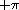
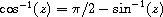
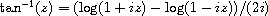
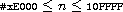
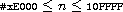

This chapter describes the operations on objects, including lists, numbers, characters, strings, vectors, bytevectors, symbols, booleans, hashtables, and enumerations. The first section covers constant objects and quotation. The second section describes generic equivalence predicates for comparing two objects and predicates for determining the type of an object. Later sections describe procedures that deal primarily with one of the object types mentioned above. There is no section treating operations on procedures, since the only operation defined specifically for procedures is application, and this is described in Chapter 5. Operations on ports are covered in the more general discussion of input and output in Chapter 7. A mechanism for defining new data types is described in Chapter 9.
syntax: constant
returns: constant
constant is any self-evaluating constant, i.e., a number, boolean, character, string, or bytevector. Constants are immutable; see the note in the description of quote below.
3.2  3.2
3.2
#f #f
#\c #\c
"hi" "hi"
#vu8(3 4 5) #vu8(3 4 5)
syntax: (quote obj)
syntax: 'obj
returns: obj
libraries: (rnrs base), (rnrs)
'obj is equivalent to (quote obj). The abbreviated form is converted into the longer form by the Scheme reader (see read).
quote inhibits the normal evaluation rule for obj, allowing obj to be employed as data. Although any Scheme object may be quoted, quotation is not necessary for self-evaluating constants, i.e., numbers, booleans, characters, strings, and bytevectors.
Quoted and self-evaluating constants are immutable. That is, programs should not alter a constant via set-car!, string-set!, etc., and implementations are permitted to raise an exception with condition type &assertion if such an alteration is attempted. If an attempt to alter an immutable object is undetected, the behavior of the program is unspecified. An implementation may choose to share storage among different constants to save space.
(+ 2 3) 5
'(+ 2 3) (+ 2 3)
(quote (+ 2 3)) (+ 2 3)
'a a
'cons cons
'() ()
'7 7
syntax: (quasiquote obj ...)
syntax: `obj
syntax: (unquote obj ...)
syntax: ,obj
syntax: (unquote-splicing obj ...)
syntax: ,@obj
returns: see below
libraries: (rnrs base), (rnrs)
`obj is equivalent to (quasiquote obj), ,obj is equivalent to (unquote obj), and ,@obj is equivalent to (unquote-splicing obj). The abbreviated forms are converted into the longer forms by the Scheme reader (see read).
quasiquote is similar to quote, but it allows parts of the quoted text to be "unquoted." Within a quasiquote expression, unquote and unquote-splicing subforms are evaluated, and everything else is quoted, i.e., left unevaluated. The value of each unquote subform is inserted into the output in place of the unquote form, while the value of each unquote-splicing subform is spliced into the surrounding list or vector structure. unquote and unquote-splicing are valid only within quasiquote expressions.
quasiquote expressions may be nested, with each quasiquote introducing a new level of quotation and each unquote or unquote-splicing taking away a level of quotation. An expression nested within n quasiquote expressions must be within n unquote or unquote-splicing expressions to be evaluated.
`(+ 2 3) (+ 2 3)
`(+ 2 ,(* 3 4)) (+ 2 12)
`(a b (,(+ 2 3) c) d) (a b (5 c) d)
`(a b ,(reverse '(c d e)) f g) (a b (e d c) f g)
(let ([a 1] [b 2])
`(,a . ,b)) (1 . 2)
`(+ ,@(cdr '(* 2 3))) (+ 2 3)
`(a b ,@(reverse '(c d e)) f g) (a b e d c f g)
(let ([a 1] [b 2])
`(,a ,@b)) (1 . 2)
`#(,@(list 1 2 3)) #(1 2 3)
'`,(cons 'a 'b) `,(cons 'a 'b)
`',(cons 'a 'b) '(a . b)
unquote and unquote-splicing forms with zero or more than one subform are valid only in splicing (list or vector) contexts. (unquote obj ...) is equivalent to (unquote obj) ..., and (unquote-splicing obj ...) is equivalent to (unquote-splicing obj) .... These forms are primarily useful as intermediate forms in the output of the quasiquote expander. They support certain useful nested quasiquotation idioms [3], such as ,@,@, which has the effect of a doubly indirect splicing when used within a doubly nested and doubly evaluated quasiquote expression.
`(a (unquote) b) (a b)
`(a (unquote (+ 3 3)) b) (a 6 b)
`(a (unquote (+ 3 3) (* 3 3)) b) (a 6 9 b)
(let ([x '(m n)]) ``(a ,@,@x f)) `(a (unquote-splicing m n) f)
(let ([x '(m n)])
(eval `(let ([m '(b c)] [n '(d e)]) `(a ,@,@x f))
(environment '(rnrs)))) (a b c d e f)
unquote and unquote-splicing are auxiliary keywords for quasiquote. It is a syntax violation to reference these identifiers except in contexts where they are recognized as auxiliary keywords.
This section describes the basic Scheme predicates (procedures returning one of the boolean values #t or #f) for determining the type of an object or the equivalence of two objects. The equivalence predicates eq?, eqv?, and equal? are discussed first, followed by the type predicates.
procedure: (eq? obj1 obj2)
returns: #t if obj1 and obj2 are identical, #f otherwise
libraries: (rnrs base), (rnrs)
In most Scheme systems, two objects are considered identical if they are represented internally by the same pointer value and distinct (not identical) if they are represented internally by different pointer values, although other criteria, such as time-stamping, are possible.
Although the particular rules for object identity vary somewhat from system to system, the following rules always hold.
eq? cannot be used to compare numbers and characters reliably. Although every inexact number is distinct from every exact number, two exact numbers, two inexact numbers, or two characters with the same value may or may not be identical.
Since constant objects are immutable, i.e., programs should not modify them via vector-set!, set-car!, or any other structure mutation operation, all or portions of different quoted constants or self-evaluating literals may be represented internally by the same object. Thus, eq? may return #t when applied to equal parts of different immutable constants.
eq? is most often used to compare symbols or to check for pointer equivalence of allocated objects, e.g., pairs, vectors, or record instances.
(eq? 'a 3) #f
(eq? #t 't) #f
(eq? "abc" 'abc) #f
(eq? "hi" '(hi)) #f
(eq? #f '()) #f
(eq? 9/2 7/2) #f
(eq? 3.4 53344) #f
(eq? 3 3.0) #f
(eq? 1/3 #i1/3) #f
(eq? 9/2 9/2) unspecified
(eq? 3.4 (+ 3.0 .4)) unspecified
(let ([x (* 12345678987654321 2)])
(eq? x x)) unspecified
(eq? #\a #\b) #f
(eq? #\a #\a) unspecified
(let ([x (string-ref "hi" 0)])
(eq? x x)) unspecified
(eq? #t #t) #t
(eq? #f #f) #t
(eq? #t #f) #f
(eq? (null? '()) #t) #t
(eq? (null? '(a)) #f) #t
(eq? (cdr '(a)) '()) #t
(eq? 'a 'a) #t
(eq? 'a 'b) #f
(eq? 'a (string->symbol "a")) #t
(eq? '(a) '(b)) #f
(eq? '(a) '(a)) unspecified
(let ([x '(a . b)]) (eq? x x)) #t
(let ([x (cons 'a 'b)])
(eq? x x)) #t
(eq? (cons 'a 'b) (cons 'a 'b)) #f
(eq? "abc" "cba") #f
(eq? "abc" "abc") unspecified
(let ([x "hi"]) (eq? x x)) #t
(let ([x (string #\h #\i)]) (eq? x x)) #t
(eq? (string #\h #\i)
(string #\h #\i)) #f
(eq? '#vu8(1) '#vu8(1)) unspecified
(eq? '#vu8(1) '#vu8(2)) #f
(let ([x (make-bytevector 10 0)])
(eq? x x)) #t
(let ([x (make-bytevector 10 0)])
(eq? x (make-bytevector 10 0))) #f
(eq? '#(a) '#(b)) #f
(eq? '#(a) '#(a)) unspecified
(let ([x '#(a)]) (eq? x x)) #t
(let ([x (vector 'a)])
(eq? x x)) #t
(eq? (vector 'a) (vector 'a)) #f
(eq? car car) #t
(eq? car cdr) #f
(let ([f (lambda (x) x)])
(eq? f f)) #t
(let ([f (lambda () (lambda (x) x))])
(eq? (f) (f))) unspecified
(eq? (lambda (x) x) (lambda (y) y)) unspecified
(let ([f (lambda (x)
(lambda ()
(set! x (+ x 1))
x))])
(eq? (f 0) (f 0))) #f
procedure: (eqv? obj1 obj2)
returns: #t if obj1 and obj2 are equivalent, #f otherwise
libraries: (rnrs base), (rnrs)
eqv? is similar to eq? except eqv? is guaranteed to return #t for two characters that are considered equal by char=? and two numbers that are (a) considered equal by = and (b) cannot be distinguished by any other operation besides eq? and eqv?. A consequence of (b) is that (eqv? -0.0 +0.0) is #f even though (= -0.0 +0.0) is #t in systems that distinguish -0.0 and +0.0, such as those based on IEEE floating-point arithmetic. This is because operations such as / can expose the difference:
(/ 1.0 -0.0) -inf.0
(/ 1.0 +0.0) +inf.0
Similarly, although 3.0 and 3.0+0.0i are considered numerically equal, they are not considered equivalent by eqv? if -0.0 and 0.0 have different representations.
(= 3.0+0.0i 3.0) #t
(eqv? 3.0+0.0i 3.0) #f
The boolean value returned by eqv? is not specified when the arguments are NaNs.
(eqv? +nan.0 (/ 0.0 0.0)) unspecified
eqv? is less implementation-dependent but generally more expensive than eq?.
(eqv? 'a 3) #f
(eqv? #t 't) #f
(eqv? "abc" 'abc) #f
(eqv? "hi" '(hi)) #f
(eqv? #f '()) #f
(eqv? 9/2 7/2) #f
(eqv? 3.4 53344) #f
(eqv? 3 3.0) #f
(eqv? 1/3 #i1/3) #f
(eqv? 9/2 9/2) #t
(eqv? 3.4 (+ 3.0 .4)) #t
(let ([x (* 12345678987654321 2)])
(eqv? x x)) #t
(eqv? #\a #\b) #f
(eqv? #\a #\a) #t
(let ([x (string-ref "hi" 0)])
(eqv? x x)) #t
(eqv? #t #t) #t
(eqv? #f #f) #t
(eqv? #t #f) #f
(eqv? (null? '()) #t) #t
(eqv? (null? '(a)) #f) #t
(eqv? (cdr '(a)) '()) #t
(eqv? 'a 'a) #t
(eqv? 'a 'b) #f
(eqv? 'a (string->symbol "a")) #t
(eqv? '(a) '(b)) #f
(eqv? '(a) '(a)) unspecified
(let ([x '(a . b)]) (eqv? x x)) #t
(let ([x (cons 'a 'b)])
(eqv? x x)) #t
(eqv? (cons 'a 'b) (cons 'a 'b)) #f
(eqv? "abc" "cba") #f
(eqv? "abc" "abc") unspecified
(let ([x "hi"]) (eqv? x x)) #t
(let ([x (string #\h #\i)]) (eqv? x x)) #t
(eqv? (string #\h #\i)
(string #\h #\i)) #f
(eqv? '#vu8(1) '#vu8(1)) unspecified
(eqv? '#vu8(1) '#vu8(2)) #f
(let ([x (make-bytevector 10 0)])
(eqv? x x)) #t
(let ([x (make-bytevector 10 0)])
(eqv? x (make-bytevector 10 0))) #f
(eqv? '#(a) '#(b)) #f
(eqv? '#(a) '#(a)) unspecified
(let ([x '#(a)]) (eqv? x x)) #t
(let ([x (vector 'a)])
(eqv? x x)) #t
(eqv? (vector 'a) (vector 'a)) #f
(eqv? car car) #t
(eqv? car cdr) #f
(let ([f (lambda (x) x)])
(eqv? f f)) #t
(let ([f (lambda () (lambda (x) x))])
(eqv? (f) (f))) unspecified
(eqv? (lambda (x) x) (lambda (y) y)) unspecified
(let ([f (lambda (x)
(lambda ()
(set! x (+ x 1))
x))])
(eqv? (f 0) (f 0))) #f
procedure: (equal? obj1 obj2)
returns: #t if obj1 and obj2 have the same
structure and contents, #f otherwise
libraries: (rnrs base), (rnrs)
Two objects are equal if they are equivalent according to eqv?, strings that are string=?, bytevectors that are bytevector=?, pairs whose cars and cdrs are equal, or vectors of the same length whose corresponding elements are equal.
equal? is required to terminate even for cyclic arguments and return #t "if and only if the (possibly infinite) unfoldings of its arguments into regular trees are equal as ordered trees" [24]. In essence, two values are equivalent, in the sense of equal?, if the structure of the two objects cannot be distinguished by any composition of pair and vector accessors along with the eqv?, string=?, and bytevector=? procedures for comparing data at the leaves.
Implementing equal? efficiently is tricky [1], and even with a good implementation, it is likely to be more expensive than either eqv? or eq?.
(equal? 'a 3) #f
(equal? #t 't) #f
(equal? "abc" 'abc) #f
(equal? "hi" '(hi)) #f
(equal? #f '()) #f
(equal? 9/2 7/2) #f
(equal? 3.4 53344) #f
(equal? 3 3.0) #f
(equal? 1/3 #i1/3) #f
(equal? 9/2 9/2) #t
(equal? 3.4 (+ 3.0 .4)) #t
(let ([x (* 12345678987654321 2)])
(equal? x x)) #t
(equal? #\a #\b) #f
(equal? #\a #\a) #t
(let ([x (string-ref "hi" 0)])
(equal? x x)) #t
(equal? #t #t) #t
(equal? #f #f) #t
(equal? #t #f) #f
(equal? (null? '()) #t) #t
(equal? (null? '(a)) #f) #t
(equal? (cdr '(a)) '()) #t
(equal? 'a 'a) #t
(equal? 'a 'b) #f
(equal? 'a (string->symbol "a")) #t
(equal? '(a) '(b)) #f
(equal? '(a) '(a)) #t
(let ([x '(a . b)]) (equal? x x)) #t
(let ([x (cons 'a 'b)])
(equal? x x)) #t
(equal? (cons 'a 'b) (cons 'a 'b)) #t
(equal? "abc" "cba") #f
(equal? "abc" "abc") #t
(let ([x "hi"]) (equal? x x)) #t
(let ([x (string #\h #\i)]) (equal? x x)) #t
(equal? (string #\h #\i)
(string #\h #\i)) #t
(equal? '#vu8(1) '#vu8(1)) #t
(equal? '#vu8(1) '#vu8(2)) #f
(let ([x (make-bytevector 10 0)])
(equal? x x)) #t
(let ([x (make-bytevector 10 0)])
(equal? x (make-bytevector 10 0))) #t
(equal? '#(a) '#(b)) #f
(equal? '#(a) '#(a)) #t
(let ([x '#(a)]) (equal? x x)) #t
(let ([x (vector 'a)])
(equal? x x)) #t
(equal? (vector 'a) (vector 'a)) #t
(equal? car car) #t
(equal? car cdr) #f
(let ([f (lambda (x) x)])
(equal? f f)) #t
(let ([f (lambda () (lambda (x) x))])
(equal? (f) (f))) unspecified
(equal? (lambda (x) x) (lambda (y) y)) unspecified
(let ([f (lambda (x)
(lambda ()
(set! x (+ x 1))
x))])
(equal? (f 0) (f 0))) #f
(equal?
(let ([x (cons 'x 'x)])
(set-car! x x)
(set-cdr! x x)
x)
(let ([x (cons 'x 'x)])
(set-car! x x)
(set-cdr! x x)
(cons x x))) #t
procedure: (boolean? obj)
returns: #t if obj is either #t or #f, #f otherwise
libraries: (rnrs base), (rnrs)
boolean? is equivalent to (lambda (x) (or (eq? x #t) (eq? x #f))).
(boolean? #t) #t
(boolean? #f) #t
(or (boolean? 't) (boolean? '())) #f
procedure: (null? obj)
returns: #t if obj is the empty list, #f otherwise
libraries: (rnrs base), (rnrs)
null? is equivalent to (lambda (x) (eq? x '())).
(null? '()) #t
(null? '(a)) #f
(null? (cdr '(a))) #t
(null? 3) #f
(null? #f) #f
procedure: (pair? obj)
returns: #t if obj is a pair, #f otherwise
libraries: (rnrs base), (rnrs)
(pair? '(a b c)) #t
(pair? '(3 . 4)) #t
(pair? '()) #f
(pair? '#(a b)) #f
(pair? 3) #f
procedure: (number? obj)
returns: #t if obj is a number object, #f otherwise
procedure: (complex? obj)
returns: #t if obj is a complex number object, #f otherwise
procedure: (real? obj)
returns: #t if obj is a real number object, #f otherwise
procedure: (rational? obj)
returns: #t if obj is a rational number object, #f otherwise
procedure: (integer? obj)
returns: #t if obj is an integer object, #f otherwise
libraries: (rnrs base), (rnrs)
These predicates form a hierarchy: any integer is rational, any rational is real, any real is complex, and any complex is numeric. Most implementations do not provide internal representations for irrational numbers, so all real numbers are typically rational as well.
The real?, rational?, and integer? predicates do not recognize as real, rational, or integer complex numbers with inexact zero imaginary parts.
(integer? 1901) #t
(rational? 1901) #t
(real? 1901) #t
(complex? 1901) #t
(number? 1901) #t
(integer? -3.0) #t
(rational? -3.0) #t
(real? -3.0) #t
(complex? -3.0) #t
(number? -3.0) #t
(integer? 7+0i) #t
(rational? 7+0i) #t
(real? 7+0i) #t
(complex? 7+0i) #t
(number? 7+0i) #t
(integer? -2/3) #f
(rational? -2/3) #t
(real? -2/3) #t
(complex? -2/3) #t
(number? -2/3) #t
(integer? -2.345) #f
(rational? -2.345) #t
(real? -2.345) #t
(complex? -2.345) #t
(number? -2.345) #t
(integer? 7.0+0.0i) #f
(rational? 7.0+0.0i) #f
(real? 7.0+0.0i) #f
(complex? 7.0+0.0i) #t
(number? 7.0+0.0i) #t
(integer? 3.2-2.01i) #f
(rational? 3.2-2.01i) #f
(real? 3.2-2.01i) #f
(complex? 3.2-2.01i) #t
(number? 3.2-2.01i) #t
(integer? 'a) #f
(rational? '(a b c)) #f
(real? "3") #f
(complex? '#(1 2)) #f
(number? #\a) #f
procedure: (real-valued? obj)
returns: #t if obj is a real number, #f otherwise
procedure: (rational-valued? obj)
returns: #t if obj is a rational number, #f otherwise
procedure: (integer-valued? obj)
returns: #t if obj is an integer, #f otherwise
libraries: (rnrs base), (rnrs)
These predicates are similar to real?, rational?, and integer?, but treat as real, rational, or integral complex numbers with inexact zero imaginary parts.
(integer-valued? 1901) #t
(rational-valued? 1901) #t
(real-valued? 1901) #t
(integer-valued? -3.0) #t
(rational-valued? -3.0) #t
(real-valued? -3.0) #t
(integer-valued? 7+0i) #t
(rational-valued? 7+0i) #t
(real-valued? 7+0i) #t
(integer-valued? -2/3) #f
(rational-valued? -2/3) #t
(real-valued? -2/3) #t
(integer-valued? -2.345) #f
(rational-valued? -2.345) #t
(real-valued? -2.345) #t
(integer-valued? 7.0+0.0i) #t
(rational-valued? 7.0+0.0i) #t
(real-valued? 7.0+0.0i) #t
(integer-valued? 3.2-2.01i) #f
(rational-valued? 3.2-2.01i) #f
(real-valued? 3.2-2.01i) #f
As with real?, rational?, and integer?, these predicates return #f for all non-numeric values.
(integer-valued? 'a) #f
(rational-valued? '(a b c)) #f
(real-valued? "3") #f
procedure: (char? obj)
returns: #t if obj is a character, #f otherwise
libraries: (rnrs base), (rnrs)
(char? 'a) #f
(char? 97) #f
(char? #\a) #t
(char? "a") #f
(char? (string-ref (make-string 1) 0)) #t
procedure: (string? obj)
returns: #t if obj is a string, #f otherwise
libraries: (rnrs base), (rnrs)
(string? "hi") #t
(string? 'hi) #f
(string? #\h) #f
procedure: (vector? obj)
returns: #t if obj is a vector, #f otherwise
libraries: (rnrs base), (rnrs)
(vector? '#()) #t
(vector? '#(a b c)) #t
(vector? (vector 'a 'b 'c)) #t
(vector? '()) #f
(vector? '(a b c)) #f
(vector? "abc") #f
procedure: (symbol? obj)
returns: #t if obj is a symbol, #f otherwise
libraries: (rnrs base), (rnrs)
(symbol? 't) #t
(symbol? "t") #f
(symbol? '(t)) #f
(symbol? #\t) #f
(symbol? 3) #f
(symbol? #t) #f
procedure: (procedure? obj)
returns: #t if obj is a procedure, #f otherwise
libraries: (rnrs base), (rnrs)
(procedure? car) #t
(procedure? 'car) #f
(procedure? (lambda (x) x)) #t
(procedure? '(lambda (x) x)) #f
(call/cc procedure?) #t
procedure: (bytevector? obj)
returns: #t if obj is a bytevector, #f otherwise
libraries: (rnrs bytevectors), (rnrs)
(bytevector? #vu8()) #t
(bytevector? '#()) #f
(bytevector? "abc") #f
procedure: (hashtable? obj)
returns: #t if obj is a hashtable, #f otherwise
libraries: (rnrs hashtables), (rnrs)
(hashtable? (make-eq-hashtable)) #t
(hashtable? '(not a hash table)) #f
The pair, or cons cell, is the most fundamental of Scheme's structured object types. The most common use for pairs is to build lists, which are ordered sequences of pairs linked one to the next by the cdr field. The elements of the list occupy the car fields of the pairs. The cdr of the last pair in a proper list is the empty list, (); the cdr of the last pair in an improper list can be anything other than ().
Pairs may be used to construct binary trees. Each pair in the tree structure is an internal node of the binary tree; its car and cdr are the children of the node.
Proper lists are printed as sequences of objects separated by whitespace and enclosed in parentheses. Matching pairs of brackets ( [ ] ) may be used in place of parentheses. For example, (1 2 3) and (a [nested list]) are proper lists. The empty list is written as ().
Improper lists and trees require a slightly more complex syntax. A single pair is written as two objects separated by whitespace and a dot, e.g., (a . b). This is referred to as dotted-pair notation. Improper lists and trees are also written in dotted-pair notation; the dot appears wherever necessary, e.g., (1 2 3 . 4) or ((1 . 2) . 3). Proper lists may be written in dotted-pair notation as well. For example, (1 2 3) may be written as (1 . (2 . (3 . ()))).
It is possible to create a circular list or a cyclic graph by destructively altering the car or cdr field of a pair, using set-car! or set-cdr!. Such lists are not considered proper lists.
Procedures that accept a list argument are required to detect that the list is improper only to the extent that they actually traverse the list far enough either (a) to attempt to operate on a non-list tail or (b) to loop indefinitely due to a circularity. For example, member need not detect that a list is improper if it actually finds the element being sought, and list-ref need never detect circularities, because its recursion is bounded by the index argument.
procedure: (cons obj1 obj2)
returns: a new pair whose car and cdr are obj1 and obj2
libraries: (rnrs base), (rnrs)
cons is the pair constructor procedure. obj1 becomes the car and obj2 becomes the cdr of the new pair.
(cons 'a '()) (a)
(cons 'a '(b c)) (a b c)
(cons 3 4) (3 . 4)
procedure: (car pair)
returns: the car of pair
libraries: (rnrs base), (rnrs)
The empty list is not a pair, so the argument must not be the empty list.
(car '(a)) a
(car '(a b c)) a
(car (cons 3 4)) 3
procedure: (cdr pair)
returns: the cdr of pair
libraries: (rnrs base), (rnrs)
The empty list is not a pair, so the argument must not be the empty list.
(cdr '(a)) ()
(cdr '(a b c)) (b c)
(cdr (cons 3 4)) 4
procedure: (set-car! pair obj)
returns: unspecified
libraries: (rnrs mutable-pairs)
set-car! changes the car of pair to obj.
(let ([x (list 'a 'b 'c)])
(set-car! x 1)
x) (1 b c)
procedure: (set-cdr! pair obj)
returns: unspecified
libraries: (rnrs mutable-pairs)
set-cdr! changes the cdr of pair to obj.
(let ([x (list 'a 'b 'c)])
(set-cdr! x 1)
x) (a . 1)
procedure: (caar pair)
procedure: (cadr pair)

procedure: (cddddr pair)
returns: the caar, cadr, ..., or cddddr of pair
libraries: (rnrs base), (rnrs)
These procedures are defined as the composition of up to four cars and cdrs. The a's and d's between the c and r represent the application of car or cdr in order from right to left. For example, the procedure cadr applied to a pair yields the car of the cdr of the pair and is equivalent to (lambda (x) (car (cdr x))).
(caar '((a))) a
(cadr '(a b c)) b
(cdddr '(a b c d)) (d)
(cadadr '(a (b c))) c
procedure: (list obj ...)
returns: a list of obj ...
libraries: (rnrs base), (rnrs)
list is equivalent to (lambda x x).
(list) ()
(list 1 2 3) (1 2 3)
(list 3 2 1) (3 2 1)
procedure: (cons* obj ... final-obj)
returns: a list of obj ... terminated by final-obj
libraries: (rnrs lists), (rnrs)
If the objects obj ... are omitted, the result is simply final-obj. Otherwise, a list of obj ... is constructed, as with list, except that the final cdr field is final-obj instead of (). If final-obj is not a list, the result is an improper list.
(cons* '()) ()
(cons* '(a b)) (a b)
(cons* 'a 'b 'c) (a b . c)
(cons* 'a 'b '(c d)) (a b c d)
procedure: (list? obj)
returns: #t if obj is a proper list, #f otherwise
libraries: (rnrs base), (rnrs)
list? must return #f for all improper lists, including cyclic lists. A definition of list? is shown on page 67.
(list? '()) #t
(list? '(a b c)) #t
(list? 'a) #f
(list? '(3 . 4)) #f
(list? 3) #f
(let ([x (list 'a 'b 'c)])
(set-cdr! (cddr x) x)
(list? x)) #f
procedure: (length list)
returns: the number of elements in list
libraries: (rnrs base), (rnrs)
length may be defined as follows, using an adaptation of the hare and tortoise algorithm used for the definition of list? on page 67.
(define length
(lambda (x)
(define improper-list
(lambda ()
(assertion-violation 'length "not a proper list" x)))
(let f ([h x] [t x] [n 0])
(if (pair? h)
(let ([h (cdr h)])
(if (pair? h)
(if (eq? h t)
(improper-list)
(f (cdr h) (cdr t) (+ n 2)))
(if (null? h)
(+ n 1)
(improper-list))))
(if (null? h)
n
(improper-list))))))
(length '()) 0
(length '(a b c)) 3
(length '(a b . c)) exception
(length
(let ([ls (list 'a 'b)])
(set-cdr! (cdr ls) ls) exception
ls))
(length
(let ([ls (list 'a 'b)])
(set-car! (cdr ls) ls) 2
ls))
procedure: (list-ref list n)
returns: the nth element (zero-based) of list
libraries: (rnrs base), (rnrs)
n must be an exact nonnegative integer less than the length of list. list-ref may be defined without error checks as follows.
(define list-ref
(lambda (ls n)
(if (= n 0)
(car ls)
(list-ref (cdr ls) (- n 1)))))
(list-ref '(a b c) 0) a
(list-ref '(a b c) 1) b
(list-ref '(a b c) 2) c
procedure: (list-tail list n)
returns: the nth tail (zero-based) of list
libraries: (rnrs base), (rnrs)
n must be an exact nonnegative integer less than or equal to the length of list. The result is not a copy; the tail is eq? to the nth cdr of list (or to list itself, if n is zero).
list-tail may be defined without error checks as follows.
(define list-tail
(lambda (ls n)
(if (= n 0)
ls
(list-tail (cdr ls) (- n 1)))))
(list-tail '(a b c) 0) (a b c)
(list-tail '(a b c) 2) (c)
(list-tail '(a b c) 3) ()
(list-tail '(a b c . d) 2) (c . d)
(list-tail '(a b c . d) 3) d
(let ([x (list 1 2 3)])
(eq? (list-tail x 2)
(cddr x))) #t
procedure: (append)
procedure: (append list ... obj)
returns: the concatenation of the input lists
libraries: (rnrs base), (rnrs)
append returns a new list consisting of the elements of the first list followed by the elements of the second list, the elements of the third list, and so on. The new list is made from new pairs for all arguments but the last; the last (which need not be a list) is merely placed at the end of the new structure. append may be defined without error checks as follows.
(define append
(lambda args
(let f ([ls '()] [args args])
(if (null? args)
ls
(let g ([ls ls])
(if (null? ls)
(f (car args) (cdr args))
(cons (car ls) (g (cdr ls)))))))))
(append '(a b c) '()) (a b c)
(append '() '(a b c)) (a b c)
(append '(a b) '(c d)) (a b c d)
(append '(a b) 'c) (a b . c)
(let ([x (list 'b)])
(eq? x (cdr (append '(a) x)))) #t
procedure: (reverse list)
returns: a new list containing the elements of list in reverse order
libraries: (rnrs base), (rnrs)
reverse may be defined without error checks as follows.
(define reverse
(lambda (ls)
(let rev ([ls ls] [new '()])
(if (null? ls)
new
(rev (cdr ls) (cons (car ls) new))))))
(reverse '()) ()
(reverse '(a b c)) (c b a)
procedure: (memq obj list)
procedure: (memv obj list)
procedure: (member obj list)
returns: the first tail of list whose car is equivalent to obj, or #f
libraries: (rnrs lists), (rnrs)
These procedures traverse the argument list in order, comparing the elements of list against obj. If an object equivalent to obj is found, the tail of the list whose first element is that object is returned. If the list contains more than one object equivalent to obj, the first tail whose first element is equivalent to obj is returned. If no object equivalent to obj is found, #f is returned. The equivalence test for memq is eq?, for memv is eqv?, and for member is equal?.
These procedures are most often used as predicates, but their names do not end with a question mark because they return a useful true value in place of #t. memq may be defined without error checks as follows.
(define memq
(lambda (x ls)
(cond
[(null? ls) #f]
[(eq? (car ls) x) ls]
[else (memq x (cdr ls))])))
memv and member may be defined similarly, with eqv? and equal? in place of eq?.
(memq 'a '(b c a d e)) (a d e)
(memq 'a '(b c d e g)) #f
(memq 'a '(b a c a d a)) (a c a d a)
(memv 3.4 '(1.2 2.3 3.4 4.5)) (3.4 4.5)
(memv 3.4 '(1.3 2.5 3.7 4.9)) #f
(let ([ls (list 'a 'b 'c)])
(set-car! (memv 'b ls) 'z)
ls) (a z c)
(member '(b) '((a) (b) (c))) ((b) (c))
(member '(d) '((a) (b) (c))) #f
(member "b" '("a" "b" "c")) ("b" "c")
(let ()
(define member?
(lambda (x ls)
(and (member x ls) #t)))
(member? '(b) '((a) (b) (c)))) #t
(define count-occurrences
(lambda (x ls)
(cond
[(memq x ls) =>
(lambda (ls)
(+ (count-occurrences x (cdr ls)) 1))]
[else 0])))
(count-occurrences 'a '(a b c d a)) 2
procedure: (memp procedure list)
returns: the first tail of list for whose car procedure returns true, or #f
libraries: (rnrs lists), (rnrs)
procedure should accept one argument and return a single value. It should not modify list.
(memp odd? '(1 2 3 4)) (1 2 3 4)
(memp even? '(1 2 3 4)) (2 3 4)
(let ([ls (list 1 2 3 4)])
(eq? (memp odd? ls) ls)) #t
(let ([ls (list 1 2 3 4)])
(eq? (memp even? ls) (cdr ls))) #t
(memp odd? '(2 4 6 8)) #f
procedure: (remq obj list)
procedure: (remv obj list)
procedure: (remove obj list)
returns: a list containing the elements of list with all occurrences of obj removed
libraries: (rnrs lists), (rnrs)
These procedures traverse the argument list, removing any objects that are equivalent to obj. The elements remaining in the output list are in the same order as they appear in the input list. If a tail of list (including list itself) contains no occurrences of obj, the corresponding tail of the result list may be the same (by eq?) as the tail of the input list.
The equivalence test for remq is eq?, for remv is eqv?, and for remove is equal?.
(remq 'a '(a b a c a d)) (b c d)
(remq 'a '(b c d)) (b c d)
(remv 1/2 '(1.2 1/2 0.5 3/2 4)) (1.2 0.5 3/2 4)
(remove '(b) '((a) (b) (c))) ((a) (c))
procedure: (remp procedure list)
returns: a list of the elements of list for which procedure returns #f
libraries: (rnrs lists), (rnrs)
procedure should accept one argument and return a single value. It should not modify list.
remp applies procedure to each element of list and returns a list containing only the elements for which procedure returns #f. The elements of the returned list appear in the same order as they appeared in the original list.
(remp odd? '(1 2 3 4)) (2 4)
(remp
(lambda (x) (and (> x 0) (< x 10)))
'(-5 15 3 14 -20 6 0 -9)) (-5 15 14 -20 0 -9)
procedure: (filter procedure list)
returns: a list of the elements of list for which procedure returns true
libraries: (rnrs lists), (rnrs)
procedure should accept one argument and return a single value. It should not modify list.
filter applies procedure to each element of list and returns a new list containing only the elements for which procedure returns true. The elements of the returned list appear in the same order as they appeared in the original list.
(filter odd? '(1 2 3 4)) (1 3)
(filter
(lambda (x) (and (> x 0) (< x 10)))
'(-5 15 3 14 -20 6 0 -9)) (3 6)
procedure: (partition procedure list)
returns: see below
libraries: (rnrs lists), (rnrs)
procedure should accept one argument and return a single value. It should not modify list.
partition applies procedure to each element of list and returns two values: a new list containing only the elements for which procedure returns true, and a new list containing only the elements for which procedure returns #f. The elements of the returned lists appear in the same order as they appeared in the original list.
(partition odd? '(1 2 3 4)) (1 3)
 (2 4)
(2 4)
(partition
(lambda (x) (and (> x 0) (< x 10)))
'(-5 15 3 14 -20 6 0 -9)) (3 6)
(-5 15 14 -20 0 -9)
The values returned by partition can be obtained by calling filter and remp separately, but this would require two calls to procedure for each element of list.
procedure: (find procedure list)
returns: the first element of list for which procedure returns true, or #f
libraries: (rnrs lists), (rnrs)
procedure should accept one argument and return a single value. It should not modify list.
find traverses the argument list in order, applying procedure to each element in turn. If procedure returns a true value for a given element, find returns that element without applying procedure to the remaining elements. If procedure returns #f for each element of list, find returns #f.
If a program must distinguish between finding #f in the list and finding no element at all, memp should be used instead.
(find odd? '(1 2 3 4)) 1
(find even? '(1 2 3 4)) 2
(find odd? '(2 4 6 8)) #f
(find not '(1 a #f 55)) #f
procedure: (assq obj alist)
procedure: (assv obj alist)
procedure: (assoc obj alist)
returns: first element of alist whose car is equivalent to obj, or #f
libraries: (rnrs lists), (rnrs)
The argument alist must be an association list. An association list is a proper list whose elements are key-value pairs of the form (key . value). Associations are useful for storing information (values) associated with certain objects (keys).
These procedures traverse the association list, testing each key for equivalence with obj. If an equivalent key is found, the key-value pair is returned. Otherwise, #f is returned.
The equivalence test for assq is eq?, for assv is eqv?, and for assoc is equal?. assq may be defined without error checks as follows.
(define assq
(lambda (x ls)
(cond
[(null? ls) #f]
[(eq? (caar ls) x) (car ls)]
[else (assq x (cdr ls))])))
assv and assoc may be defined similarly, with eqv? and equal? in place of eq?.
(assq 'b '((a . 1) (b . 2))) (b . 2)
(cdr (assq 'b '((a . 1) (b . 2)))) 2
(assq 'c '((a . 1) (b . 2))) #f
(assv 2/3 '((1/3 . 1) (2/3 . 2))) (2/3 . 2)
(assv 2/3 '((1/3 . a) (3/4 . b))) #f
(assoc '(a) '(((a) . a) (-1 . b))) ((a) . a)
(assoc '(a) '(((b) . b) (a . c))) #f
(let ([alist (list (cons 2 'a) (cons 3 'b))])
(set-cdr! (assv 3 alist) 'c)
alist) ((2 . a) (3 . c))
The interpreter given in Section 12.7 represents environments as association lists and uses assq for both variable lookup and assignment.
procedure: (assp procedure alist)
returns: first element of alist for whose car procedure returns true, or #f
libraries: (rnrs lists), (rnrs)
alist must be an association list. An association list is a proper list whose elements are key-value pairs of the form (key . value). procedure should accept one argument and return a single value. It should not modify list.
(assp odd? '((1 . a) (2 . b))) (1 . a)
(assp even? '((1 . a) (2 . b))) (2 . b)
(let ([ls (list (cons 1 'a) (cons 2 'b))])
(eq? (assp odd? ls) (car ls))) #t
(let ([ls (list (cons 1 'a) (cons 2 'b))])
(eq? (assp even? ls) (cadr ls))) #t
(assp odd? '((2 . b))) #f
procedure: (list-sort predicate list)
returns: a list containing the elements of list sorted according to predicate
libraries: (rnrs sorting), (rnrs)
predicate should be a procedure that expects two arguments and returns #t if its first argument must precede its second in the sorted list. That is, if predicate is applied to two elements x and y, where x appears after y in the input list, it should return true only if x should appear before y in the output list. If this constraint is met, list-sort performs a stable sort, i.e., two elements are reordered only when necessary according to predicate. Duplicate elements are not removed. This procedure may call predicate up to nlogn times, where n is the length of list.
(list-sort < '(3 4 2 1 2 5)) (1 2 2 3 4 5)
(list-sort > '(0.5 1/2)) (0.5 1/2)
(list-sort > '(1/2 0.5)) (1/2 0.5)
(list->string
(list-sort char>?
(string->list "hello"))) "ollhe"
Scheme numbers may be classified as integers, rational numbers, real numbers, or complex numbers. This classification is hierarchical, in that all integers are rational, all rational numbers are real, and all real numbers are complex. The predicates integer?, rational?, real?, and complex? described in Section 6.2 are used to determine into which of these classes a number falls.
A Scheme number may also be classified as exact or inexact, depending upon the quality of operations used to derive the number and the inputs to these operations. The predicates exact? and inexact? may be used to determine the exactness of a number. Most operations on numbers in Scheme are exactness preserving: if given exact operands they return exact values, and if given inexact operands or a combination of exact and inexact operands they return inexact values.
Exact integer and rational arithmetic is typically supported to arbitrary precision; the size of an integer or of the denominator or numerator of a ratio is limited only by system storage constraints. Although other representations are possible, inexact numbers are typically represented by floating-point numbers supported by the host computer's hardware or by system software. Complex numbers are typically represented as ordered pairs (real-part, imag-part), where real-part and imag-part are exact integers, exact rationals, or floating-point numbers.
Scheme numbers are written in a straightforward manner not much different from ordinary conventions for writing numbers. An exact integer is normally written as a sequence of numerals preceded by an optional sign. For example, 3, +19, -100000, and 208423089237489374 all represent exact integers.
An exact rational number is normally written as two sequences of numerals separated by a slash (/) and preceded by an optional sign. For example, 3/4, -6/5, and 1/1208203823 are all exact rational numbers. A ratio is reduced immediately to lowest terms when it is read and may in fact reduce to an exact integer.
Inexact real numbers are normally written in either floating-point or scientific notation. Floating-point notation consists of a sequence of numerals followed by a decimal point and another sequence of numerals, all preceded by an optional sign. Scientific notation consists of an optional sign, a sequence of numerals, an optional decimal point followed by a second string of numerals, and an exponent; an exponent is written as the letter e followed by an optional sign and a sequence of numerals. For example, 1.0 and -200.0 are valid inexact integers, and 1.5, 0.034, -10e-10 and 1.5e-5 are valid inexact rational numbers. The exponent is the power of ten by which the number preceding the exponent should be scaled, so that 2e3 is equivalent to 2000.0.
A mantissa width |w may appear as the suffix of a real number or the real components of a complex number written in floating-point or scientific notation. The mantissa width m represents the number of significant bits in the representation of the number. The mantissa width defaults to 53, the number of significant bits in a normalized IEEE double floating-point number, or more. For denormalized IEEE double floating-point numbers, the mantissa width is less than 53. If an implementation cannot represent a number with the mantissa width specified, it uses a representation with at least as many significant bits as requested if possible, otherwise it uses its representation with the largest mantissa width.
Exact and inexact real numbers are written as exact or inexact integers or rational numbers; no provision is made in the syntax of Scheme numbers for nonrational real numbers, i.e., irrational numbers.
Complex numbers may be written in either rectangular or polar form. In rectangular form, a complex number is written as x+yi or x-yi, where x is an integer, rational, or real number and y is an unsigned integer, rational, or real number. The real part, x, may be omitted, in which case it is assumed to be zero. For example, 3+4i, 3.2-3/4i, +i, and -3e-5i are complex numbers written in rectangular form. In polar form, a complex number is written as x@y, where x and y are integer, rational, or real numbers. For example, 1.1@1.764 and -1@-1/2 are complex numbers written in polar form.
The syntaxes +inf.0 and -inf.0 represent inexact real numbers that represent positive and negative infinity. The syntaxes +nan.0 and -nan.0 represent an inexact "not-a-number" (NaN) value. Infinities may be produced by dividing inexact positive and negative values by inexact zero, and NaNs may also be produced by dividing inexact zero by inexact zero, among other ways.
The exactness of a numeric representation may be overridden by preceding the representation by either #e or #i. #e forces the number to be exact, and #i forces it to be inexact. For example, 1, #e1, 1/1, #e1/1, #e1.0, and #e1e0 all represent the exact integer 1, and #i3/10, 0.3, #i0.3, and 3e-1 all represent the inexact rational 0.3.
Numbers are written by default in base 10, although the special prefixes #b (binary), #o (octal), #d (decimal), and #x (hexadecimal) can be used to specify base 2, base 8, base 10, or base 16. For radix 16, the letters a through f or A through F serve as the additional numerals required to express digit values 10 through 15. For example, #b10101 is the binary equivalent of 2110, #o72 is the octal equivalent of 5810, and #xC7 is the hexadecimal equivalent of 19910. Numbers written in floating-point and scientific notations are always written in base 10.
If both are present, radix and exactness prefixes may appear in either order.
A Scheme implementation may support more than one size of internal representation for inexact quantities. The exponent markers s (short), f (single), d (double), and l (long) may appear in place of the default exponent marker e to override the default size for numbers written in scientific notation. In implementations that support multiple representations, the default size has at least as much precision as double.
A precise grammar for Scheme numbers is given on page 459.
Any number can be written in a variety of different ways, but the system printer (invoked by put-datum, write, and display) and number->string express numbers in a compact form, using the fewest number of digits necessary to retain the property that, when read, the printed number is identical to the original number.
The remainder of this section describes "generic arithmetic" procedures that operate on numbers. The two sections that follow this section describe operations specific to fixnums and flonums, which are representations of exact, fixed-precision integer values and inexact real values.
The types of numeric arguments accepted by the procedures in this section are implied by the names given to the arguments: num for complex numbers (that is, all numbers), real for real numbers, rat for rational numbers, and int for integers. If a real, rat, or int is required, the argument must be considered real, rational, or integral by real?, rational?, or integer?, i.e., the imaginary part of the number must be exactly zero. Where exact integers are required, the name exint is used. In each case, a suffix may appear on the name, e.g., int2.
procedure: (exact? num)
returns: #t if num is exact, #f otherwise
libraries: (rnrs base), (rnrs)
(exact? 1) #t
(exact? -15/16) #t
(exact? 2.01) #f
(exact? #i77) #f
(exact? #i2/3) #f
(exact? 1.0-2i) #f
procedure: (inexact? num)
returns: #t if num is inexact, #f otherwise
libraries: (rnrs base), (rnrs)
(inexact? -123) #f
(inexact? #i123) #t
(inexact? 1e23) #t
(inexact? +i) #f
procedure: (= num1 num2 num3 ...)
procedure: (< real1 real2 real3 ...)
procedure: (> real1 real2 real3 ...)
procedure: (<= real1 real2 real3 ...)
procedure: (>= real1 real2 real3 ...)
returns: #t if the relation holds, #f otherwise
libraries: (rnrs base), (rnrs)
The predicate = returns #t if its arguments are equal. The predicate < returns #t if its arguments are monotonically increasing, i.e., each argument is greater than the preceding ones, while > returns #t if its arguments are monotonically decreasing. The predicate <= returns #t if its arguments are monotonically nondecreasing, i.e., each argument is not less than the preceding ones, while >= returns #t if its arguments are monotonically nonincreasing.
As implied by the names of the arguments, = is defined for complex arguments while the other relational predicates are defined only for real arguments. Two complex numbers are considered equal if their real and imaginary parts are equal. Comparisons involving NaNs always return #f.
(= 7 7) #t
(= 7 9) #f
(< 2e3 3e2) #f
(<= 1 2 3 3 4 5) #t
(<= 1 2 3 4 5) #t
(> 1 2 2 3 3 4) #f
(>= 1 2 2 3 3 4) #f
(= -1/2 -0.5) #t
(= 2/3 .667) #f
(= 7.2+0i 7.2) #t
(= 7.2-3i 7) #f
(< 1/2 2/3 3/4) #t
(> 8 4.102 2/3 -5) #t
(let ([x 0.218723452])
(< 0.210 x 0.220)) #t
(let ([i 1] [v (vector 'a 'b 'c)])
(< -1 i (vector-length v))) #t
(apply < '(1 2 3 4)) #t
(apply > '(4 3 3 2)) #f
(= +nan.0 +nan.0) #f
(< +nan.0 +nan.0) #f
(> +nan.0 +nan.0) #f
(>= +inf.0 +nan.0) #f
(>= +nan.0 -inf.0) #f
(> +nan.0 0.0) #f
procedure: (+ num ...)
returns: the sum of the arguments num ...
libraries: (rnrs base), (rnrs)
When called with no arguments, + returns 0.
(+) 0
(+ 1 2) 3
(+ 1/2 2/3) 7/6
(+ 3 4 5) 12
(+ 3.0 4) 7.0
(+ 3+4i 4+3i) 7+7i
(apply + '(1 2 3 4 5)) 15
procedure: (- num)
returns: the additive inverse of num
procedure: (- num1 num2 num3 ...)
returns: the difference between num1 and the sum of num2 num3 ...
libraries: (rnrs base), (rnrs)
(- 3) -3
(- -2/3) 2/3
(- 4 3.0) 1.0
(- 3.25+4.25i 1/4+1/4i) 3.0+4.0i
(- 4 3 2 1) -2
procedure: (* num ...)
returns: the product of the arguments num ...
libraries: (rnrs base), (rnrs)
When called with no arguments, * returns 1.
(*) 1
(* 3.4) 3.4
(* 1 1/2) 1/2
(* 3 4 5.5) 66.0
(* 1+2i 3+4i) -5+10i
(apply * '(1 2 3 4 5)) 120
procedure: (/ num)
returns: the multiplicative inverse of num
procedure: (/ num1 num2 num3 ...)
returns: the result of dividing num1 by the product of num2 num3 ...
libraries: (rnrs base), (rnrs)
(/ -17) -1/17
(/ 1/2) 2
(/ .5) 2.0
(/ 3 4) 3/4
(/ 3.0 4) .75
(/ -5+10i 3+4i) 1+2i
(/ 60 5 4 3 2) 1/2
procedure: (zero? num)
returns: #t if num is zero, #f otherwise
libraries: (rnrs base), (rnrs)
zero? is equivalent to (lambda (x) (= x 0)).
(zero? 0) #t
(zero? 1) #f
(zero? (- 3.0 3.0)) #t
(zero? (+ 1/2 1/2)) #f
(zero? 0+0i) #t
(zero? 0.0-0.0i) #t
procedure: (positive? real)
returns: #t if real is greater than zero, #f otherwise
libraries: (rnrs base), (rnrs)
positive? is equivalent to (lambda (x) (> x 0)).
(positive? 128) #t
(positive? 0.0) #f
(positive? 1.8e-15) #t
(positive? -2/3) #f
(positive? .001-0.0i) exception: not a real number
procedure: (negative? real)
returns: #t if real is less than zero, #f otherwise
libraries: (rnrs base), (rnrs)
negative? is equivalent to (lambda (x) (< x 0)).
(negative? -65) #t
(negative? 0) #f
(negative? -0.0121) #t
(negative? 15/16) #f
(negative? -7.0+0.0i) exception: not a real number
procedure: (even? int)
returns: #t if int is even, #f otherwise
procedure: (odd? int)
returns: #t if int is odd, #f otherwise
libraries: (rnrs base), (rnrs)
(even? 0) #t
(even? 1) #f
(even? 2.0) #t
(even? -120762398465) #f
(even? 2.0+0.0i) exception: not an integer
(odd? 0) #f
(odd? 1) #t
(odd? 2.0) #f
(odd? -120762398465) #t
(odd? 2.0+0.0i) exception: not an integer
procedure: (finite? real)
returns: #t if real is finite, #f otherwise
procedure: (infinite? real)
returns: #t if real is infinite, #f otherwise
procedure: (nan? real)
returns: #t if real is a NaN, #f otherwise
libraries: (rnrs base), (rnrs)
(finite? 2/3) #t
(infinite? 2/3) #f
(nan? 2/3) #f
(finite? 3.1415) #t
(infinite? 3.1415) #f
(nan? 3.1415) #f
(finite? +inf.0) #f
(infinite? -inf.0) #t
(nan? -inf.0) #f
(finite? +nan.0) #f
(infinite? +nan.0) #f
(nan? +nan.0) #t
procedure: (quotient int1 int2)
returns: the integer quotient of int1 and int2
procedure: (remainder int1 int2)
returns: the integer remainder of int1 and int2
procedure: (modulo int1 int2)
returns: the integer modulus of int1 and int2
libraries: (rnrs r5rs)
The result of remainder has the same sign as int1, while the result of modulo has the same sign as int2.
(quotient 45 6) 7
(quotient 6.0 2.0) 3.0
(quotient 3.0 -2) -1.0
(remainder 16 4) 0
(remainder 5 2) 1
(remainder -45.0 7) -3.0
(remainder 10.0 -3.0) 1.0
(remainder -17 -9) -8
(modulo 16 4) 0
(modulo 5 2) 1
(modulo -45.0 7) 4.0
(modulo 10.0 -3.0) -2.0
(modulo -17 -9) -8
procedure: (div x1 x2)
procedure: (mod x1 x2)
procedure: (div-and-mod x1 x2)
returns: see below
libraries: (rnrs base), (rnrs)
If x1 and x2 are exact, x2 must not be zero. These procedures implement number-theoretic integer division, with the div operation being related to quotient and the mod operation being related to remainder or modulo, but in both cases extended to handle real numbers.
The value nd of (div x1 x2) is an integer, and the value xm of (mod x1 x2) is a real number such that x1 = nd · x2 + xm and 0 ≤ xm < |x2|. In situations where the implementation cannot represent the mathematical results prescribed by these equations as a number object, div and mod return an unspecified number or raise an exception with condition type &implementation-restriction.
The div-and-mod procedure behaves as if defined as follows.
(define (div-and-mod x1 x2) (values (div x1 x2) (mod x1 x2)))
That is, unless it raises an exception in the circumstance described above, it returns two values: the result of calling div on the two arguments and the result of calling mod on the two arguments.
(div 17 3) 5
(mod 17 3) 2
(div -17 3) -6
(mod -17 3) 1
(div 17 -3) -5
(mod 17 -3) 2
(div -17 -3) 6
(mod -17 -3) 1
(div-and-mod 17.5 3) 5.0
2.5
procedure: (div0 x1 x2)
procedure: (mod0 x1 x2)
procedure: (div0-and-mod0 x1 x2)
returns: see below
libraries: (rnrs base), (rnrs)
If x1 and x2 are exact, x2 must not be zero. These procedures are similar to div, mod, and div-and-mod, but constrain the "mod" value differently, which also affects the "div" value. The value nd of (div0 x1 x2) is an integer, and the value xm of (mod0 x1 x2) is a real number such that x1 = nd · x2 + xm and -|x2/2| ≤ xm < |x2/2|. In situations where the implementation cannot represent the mathematical results prescribed by these equations as a number object, div0 and mod0 return an unspecified number or raise an exception with condition type &implementation-restriction.
The div0-and-mod0 procedure behaves as if defined as follows.
(define (div0-and-mod0 x1 x2) (values (div0 x1 x2) (mod0 x1 x2)))
That is, unless it raises an exception in the circumstance described above, it returns two values: the result of calling div0 on the two arguments and the result of calling mod0 on the two arguments.
(div0 17 3) 6
(mod0 17 3) -1
(div0 -17 3) -6
(mod0 -17 3) 1
(div0 17 -3) -6
(mod0 17 -3) -1
(div0 -17 -3) 6
(mod0 -17 -3) 1
(div0-and-mod0 17.5 3) 6.0
-0.5
procedure: (truncate real)
returns: the integer closest to real toward zero
libraries: (rnrs base), (rnrs)
If real is an infinity or NaN, truncate returns real.
(truncate 19) 19
(truncate 2/3) 0
(truncate -2/3) 0
(truncate 17.3) 17.0
(truncate -17/2) -8
procedure: (floor real)
returns: the integer closest to real toward 
libraries: (rnrs base), (rnrs)
If real is an infinity or NaN, floor returns real.
(floor 19) 19
(floor 2/3) 0
(floor -2/3) -1
(floor 17.3) 17.0
(floor -17/2) -9
procedure: (ceiling real)
returns: the integer closest to real toward 
libraries: (rnrs base), (rnrs)
If real is an infinity or NaN, ceiling returns real.
(ceiling 19) 19
(ceiling 2/3) 1
(ceiling -2/3) 0
(ceiling 17.3) 18.0
(ceiling -17/2) -8
procedure: (round real)
returns: the integer closest to real
libraries: (rnrs base), (rnrs)
If real is exactly between two integers, the closest even integer is returned. If real is an infinity or NaN, round returns real.
(round 19) 19
(round 2/3) 1
(round -2/3) -1
(round 17.3) 17.0
(round -17/2) -8
(round 2.5) 2.0
(round 3.5) 4.0
procedure: (abs real)
returns: the absolute value of real
libraries: (rnrs base), (rnrs)
abs is equivalent to (lambda (x) (if (< x 0) (- x) x)). abs and magnitude (see page 183) are identical for real inputs.
(abs 1) 1
(abs -3/4) 3/4
(abs 1.83) 1.83
(abs -0.093) 0.093
procedure: (max real1 real2 ...)
returns: the maximum of real1 real2 ...
libraries: (rnrs base), (rnrs)
(max 4 -7 2 0 -6) 4
(max 1/2 3/4 4/5 5/6 6/7) 6/7
(max 1.5 1.3 -0.3 0.4 2.0 1.8) 2.0
(max 5 2.0) 5.0
(max -5 -2.0) -2.0
(let ([ls '(7 3 5 2 9 8)])
(apply max ls)) 9
procedure: (min real1 real2 ...)
returns: the minimum of real1 real2 ...
libraries: (rnrs base), (rnrs)
(min 4 -7 2 0 -6) -7
(min 1/2 3/4 4/5 5/6 6/7) 1/2
(min 1.5 1.3 -0.3 0.4 2.0 1.8) -0.3
(min 5 2.0) 2.0
(min -5 -2.0) -5.0
(let ([ls '(7 3 5 2 9 8)])
(apply min ls)) 2
procedure: (gcd int ...)
returns: the greatest common divisor of its arguments int ...
libraries: (rnrs base), (rnrs)
The result is always nonnegative, i.e., factors of -1 are ignored. When called with no arguments, gcd returns 0.
(gcd) 0
(gcd 34) 34
(gcd 33.0 15.0) 3.0
(gcd 70 -42 28) 14
procedure: (lcm int ...)
returns: the least common multiple of its arguments int ...
libraries: (rnrs base), (rnrs)
The result is always nonnegative, i.e., common multiples of -1 are ignored. Although lcm should probably return "> when called with no arguments, it is defined to return 1. If one or more of the arguments is 0, lcm returns 0.
(lcm) 1
(lcm 34) 34
(lcm 33.0 15.0) 165.0
(lcm 70 -42 28) 420
(lcm 17.0 0) 0.0
procedure: (expt num1 num2)
returns: num1 raised to the num2 power
libraries: (rnrs base), (rnrs)
If both arguments are 0, expt returns 1.
(expt 2 10) 1024
(expt 2 -10) 1/1024
(expt 2 -10.0) 9.765625e-4
(expt -1/2 5) -1/32
(expt 3.0 3) 27.0
(expt +i 2) -1
procedure: (inexact num)
returns: an inexact representation of num
libraries: (rnrs base), (rnrs)
If num is already inexact, it is returned unchanged. If no inexact representation for num is supported by the implementation, an exception with condition type &implementation-violation may be raised. inexact may also return +inf.0 or -inf.0 for inputs whose magnitude exceeds the range of the implementation's inexact number representations.
(inexact 3) 3.0
(inexact 3.0) 3.0
(inexact -1/4) -.25
(inexact 3+4i) 3.0+4.0i
(inexact (expt 10 20)) 1e20
procedure: (exact num)
returns: an exact representation of num
libraries: (rnrs base), (rnrs)
If num is already exact, it is returned unchanged. If no exact representation for num is supported by the implementation, an exception with condition type &implementation-violation may be raised.
(exact 3.0) 3
(exact 3) 3
(exact -.25) -1/4
(exact 3.0+4.0i) 3+4i
(exact 1e20) 100000000000000000000
procedure: (exact->inexact num)
returns: an inexact representation of num
procedure: (inexact->exact num)
returns: an exact representation of num
libraries: (rnrs r5rs)
These are alternative names for inexact and exact, supported for compatibility with the Revised5 Report.
procedure: (rationalize real1 real2)
returns: see below
libraries: (rnrs base), (rnrs)
rationalize returns the simplest rational number that differs from real1 by no more than real2. A rational number q1 = n1/m1 is simpler than another rational number q2 = n2/m2 if |n1| ≤ |n2| and |m1| ≤ |m2| and either |n1| < |n2| or |m1| < |m2|.
(rationalize 3/10 1/10) 1/3
(rationalize .3 1/10) 0.3333333333333333
(eqv? (rationalize .3 1/10) #i1/3) #t
procedure: (numerator rat)
returns: the numerator of rat
libraries: (rnrs base), (rnrs)
If rat is an integer, the numerator is rat.
(numerator 9) 9
(numerator 9.0) 9.0
(numerator 0.0) 0.0
(numerator 2/3) 2
(numerator -9/4) -9
(numerator -2.25) -9.0
procedure: (denominator rat)
returns: the denominator of rat
libraries: (rnrs base), (rnrs)
If rat is an integer, including zero, the denominator is one.
(denominator 9) 1
(denominator 9.0) 1.0
(denominator 0) 1
(denominator 0.0) 1.0
(denominator 2/3) 3
(denominator -9/4) 4
(denominator -2.25) 4.0
procedure: (real-part num)
returns: the real component of num
libraries: (rnrs base), (rnrs)
If num is real, real-part returns num.
(real-part 3+4i) 3
(real-part -2.3+0.7i) -2.3
(real-part -i) 0
(real-part 17.2) 17.2
(real-part -17/100) -17/100
procedure: (imag-part num)
returns: the imaginary component of num
libraries: (rnrs base), (rnrs)
If num is real, imag-part returns exact zero.
(imag-part 3+4i) 4
(imag-part -2.3+0.7i) 0.7
(imag-part -i) -1
(imag-part -2.5) 0
(imag-part -17/100) 0
procedure: (make-rectangular real1 real2)
returns: a complex number with real component real1 and imaginary
component real2
libraries: (rnrs base), (rnrs)
(make-rectangular -2 7) -2+7i
(make-rectangular 2/3 -1/2) 2/3-1/2i
(make-rectangular 3.2 5.3) 3.2+5.3i
procedure: (make-polar real1 real2)
returns: a complex number with magnitude real1 and angle
real2
libraries: (rnrs base), (rnrs)
(make-polar 2 0) 2
(make-polar 2.0 0.0) 2.0+0.0i
(make-polar 1.0 (asin -1.0)) 0.0-1.0i
(eqv? (make-polar 7.2 -0.588) 7.2@-0.588) #t
procedure: (angle num)
returns: the angle part of the polar representation of num
libraries: (rnrs base), (rnrs)
The range of the result is "> (exclusive) to "> (inclusive).
(angle 7.3@1.5708) 1.5708
(angle 5.2) 0.0
procedure: (magnitude num)
returns: the magnitude of num
libraries: (rnrs base), (rnrs)
magnitude and abs
(see page 178) are identical for real arguments.
The magnitude of a complex number x + yi is
 .
.
(magnitude 1) 1
(magnitude -3/4) 3/4
(magnitude 1.83) 1.83
(magnitude -0.093) 0.093
(magnitude 3+4i) 5
(magnitude 7.25@1.5708) 7.25
procedure: (sqrt num)
returns: the principal square root of num
libraries: (rnrs base), (rnrs)
Implementations are encouraged, but not required, to return exact results for exact inputs to sqrt whenever feasible.
(sqrt 16) 4
(sqrt 1/4) 1/2
(sqrt 4.84) 2.2
(sqrt -4.84) 0.0+2.2i
(sqrt 3+4i) 2+1i
(sqrt -3.0-4.0i) 1.0-2.0i
procedure: (exact-integer-sqrt n)
returns: see below
libraries: (rnrs base), (rnrs)
This procedure returns two nonnegative exact integers s and r where n = s2 + r and n < (s + 1)2.
(exact-integer-sqrt 0) 0
0
(exact-integer-sqrt 9) 3
0
(exact-integer-sqrt 19) 4
3
procedure: (exp num)
returns: e to the num power
libraries: (rnrs base), (rnrs)
(exp 0.0) 1.0
(exp 1.0) 2.7182818284590455
(exp -.5) 0.6065306597126334
procedure: (log num)
returns: the natural logarithm of num
procedure: (log num1 num2)
returns: the base-num2 logarithm of num1
libraries: (rnrs base), (rnrs)
(log 1.0) 0.0
(log (exp 1.0)) 1.0
(/ (log 100) (log 10)) 2.0
(log (make-polar (exp 2.0) 1.0)) 2.0+1.0i
(log 100.0 10.0) 2.0
(log .125 2.0) -3.0
procedure: (sin num)
procedure: (cos num)
procedure: (tan num)
returns: the sine, cosine, or tangent of num
libraries: (rnrs base), (rnrs)
The argument is specified in radians.
(sin 0.0) 0.0
(cos 0.0) 1.0
(tan 0.0) 0.0
procedure: (asin num)
procedure: (acos num)
returns: the arc sine or the arc cosine of num
libraries: (rnrs base), (rnrs)
The result is in radians. The arc sine and arc cosine of a complex number z are defined as follows.

">
(define pi (* (asin 1) 2))
(= (* (acos 0) 2) pi) #t
procedure: (atan num)
procedure: (atan real1 real2)
returns: see below
libraries: (rnrs base), (rnrs)
When passed a single complex argument num (the first form), atan returns the arc tangent of num. The arc tangent of a complex number z is defined as follows.
">
When passed two real arguments (the second form), atan is equivalent to (lambda (y x) (angle (make-rectangular x y))).
(define pi (* (atan 1) 4))
(= (* (atan 1.0 0.0) 2) pi) #t
procedure: (bitwise-not exint)
returns: the bitwise not of exint
procedure: (bitwise-and exint ...)
returns: the bitwise and of exint ...
procedure: (bitwise-ior exint ...)
returns: the bitwise inclusive or of exint ...
procedure: (bitwise-xor exint ...)
returns: the bitwise exclusive or of exint ...
libraries: (rnrs arithmetic bitwise), (rnrs)
The inputs are treated as if represented in two's complement, even if they are not represented that way internally.
(bitwise-not 0) -1
(bitwise-not 3) -4
(bitwise-and #b01101 #b00111) #b00101
(bitwise-ior #b01101 #b00111) #b01111
(bitwise-xor #b01101 #b00111) #b01010
procedure: (bitwise-if exint1 exint2 exint3)
returns: the bitwise "if" of its arguments
libraries: (rnrs arithmetic bitwise), (rnrs)
The inputs are treated as if represented in two's complement, even if they are not represented that way internally.
For each bit set in exint1, the corresponding bit of the result is taken from exint2, and for each bit not set in exint1, the corresponding bit of the result is taken from x3.
(bitwise-if #b101010 #b111000 #b001100) #b101100
bitwise-if might be defined as follows:
(define bitwise-if
(lambda (exint1 exint2 exint3)
(bitwise-ior
(bitwise-and exint1 exint2)
(bitwise-and (bitwise-not exint1) exint3))))
procedure: (bitwise-bit-count exint)
returns: see below
libraries: (rnrs arithmetic bitwise), (rnrs)
For nonnegative inputs, bitwise-bit-count returns the number of bits set in the two's complement representation of exint. For negative inputs, it returns a negative number whose magnitude is one greater than the number of bits not set in the two's complement representation of exint, which is equivalent to (bitwise-not (bitwise-bit-count (bitwise-not exint))).
(bitwise-bit-count #b00000) 0
(bitwise-bit-count #b00001) 1
(bitwise-bit-count #b00100) 1
(bitwise-bit-count #b10101) 3
(bitwise-bit-count -1) -1
(bitwise-bit-count -2) -2
(bitwise-bit-count -4) -3
procedure: (bitwise-length exint)
returns: see below
libraries: (rnrs arithmetic bitwise), (rnrs)
This procedure returns the number of bits of the smallest two's complement representation of exint, not including the sign bit for negative numbers. For 0 bitwise-length returns 0.
(bitwise-length #b00000) 0
(bitwise-length #b00001) 1
(bitwise-length #b00100) 3
(bitwise-length #b00110) 3
(bitwise-length -1) 0
(bitwise-length -6) 3
(bitwise-length -9) 4
procedure: (bitwise-first-bit-set exint)
returns: the index of the least significant bit set in exint
libraries: (rnrs arithmetic bitwise), (rnrs)
The input is treated as if represented in two's complement, even if it is not represented that way internally.
If exint is 0, bitwise-first-bit-set returns -1.
(bitwise-first-bit-set #b00000) -1
(bitwise-first-bit-set #b00001) 0
(bitwise-first-bit-set #b01100) 2
(bitwise-first-bit-set -1) 0
(bitwise-first-bit-set -2) 1
(bitwise-first-bit-set -3) 0
procedure: (bitwise-bit-set? exint1 exint2)
returns: #t if bit exint2 of exint1 is set, #f otherwise
libraries: (rnrs arithmetic bitwise), (rnrs)
exint2 is taken as a zero-based index for the bits in the two's complement representation of exint1. The two's complement representation of a nonnegative number conceptually extends to the left (toward more significant bits) with an infinite number of zero bits, and the two's complement representation of a negative number conceptually extends to the left with an infinite number of one bits. Thus, exact integers can be used to represent arbitrarily large sets, where 0 is the empty set, -1 is the universe, and bitwise-bit-set? is used to test for membership.
(bitwise-bit-set? #b01011 0) #t
(bitwise-bit-set? #b01011 2) #f
(bitwise-bit-set? -1 0) #t
(bitwise-bit-set? -1 20) #t
(bitwise-bit-set? -3 1) #f
(bitwise-bit-set? 0 5000) #f
(bitwise-bit-set? -1 5000) #t
procedure: (bitwise-copy-bit exint1 exint2 exint3)
returns: exint1 with bit exint2 replaced by exint3
libraries: (rnrs arithmetic bitwise), (rnrs)
exint2 is taken as a zero-based index for the bits in the two's complement representation of exint1. exint3 must be 0 or 1. This procedure effectively clears or sets the specified bit depending on the value of exint3. exint1 is treated as if represented in two's complement, even if it is not represented that way internally.
(bitwise-copy-bit #b01110 0 1) #b01111
(bitwise-copy-bit #b01110 2 0) #b01010
procedure: (bitwise-bit-field exint1 exint2 exint3)
returns: see below
libraries: (rnrs arithmetic bitwise), (rnrs)
exint2 and exint3 must be nonnegative, and exint2 must not be greater than exint3. This procedure returns the number represented by extracting from exint1 the sequence of bits from exint2 (inclusive) to exint3 (exclusive). exint1 is treated as if represented in two's complement, even if it is not represented that way internally.
(bitwise-bit-field #b10110 0 3) #b00110
(bitwise-bit-field #b10110 1 3) #b00011
(bitwise-bit-field #b10110 2 3) #b00001
(bitwise-bit-field #b10110 3 3) #b00000
procedure: (bitwise-copy-bit-field exint1 exint2 exint3 exint4)
returns: see below
libraries: (rnrs arithmetic bitwise), (rnrs)
exint2 and exint3 must be nonnegative, and exint2 must not be greater than exint3. This procedure returns exint1 with the n bits from exint2 (inclusive) to exint3 (exclusive) replaced by the low-order n bits of exint4. exint1 and exint4 are treated as if represented in two's complement, even if they are not represented that way internally.
(bitwise-copy-bit-field #b10000 0 3 #b10101) #b10101
(bitwise-copy-bit-field #b10000 1 3 #b10101) #b10010
(bitwise-copy-bit-field #b10000 2 3 #b10101) #b10100
(bitwise-copy-bit-field #b10000 3 3 #b10101) #b10000
procedure: (bitwise-arithmetic-shift-right exint1 exint2)
returns: exint1 arithmetically shifted right by exint2 bits
procedure: (bitwise-arithmetic-shift-left exint1 exint2)
returns: exint1 shifted left by exint2 bits
libraries: (rnrs arithmetic bitwise), (rnrs)
exint2 must be nonnegative. exint1 is treated as if represented in two's complement, even if it is not represented that way internally.
(bitwise-arithmetic-shift-right #b10000 3) #b00010
(bitwise-arithmetic-shift-right -1 1) -1
(bitwise-arithmetic-shift-right -64 3) -8
(bitwise-arithmetic-shift-left #b00010 2) #b01000
(bitwise-arithmetic-shift-left -1 2) -4
procedure: (bitwise-arithmetic-shift exint1 exint2)
returns: see below
libraries: (rnrs arithmetic bitwise), (rnrs)
If exint2 is negative, bitwise-arithmetic-shift returns the result of arithmetically shifting exint1 right by exint2 bits. Otherwise, bitwise-arithmetic-shift returns the result of shifting exint1 left by exint2 bits. exint1 is treated as if represented in two's complement, even if it is not represented that way internally.
(bitwise-arithmetic-shift #b10000 -3) #b00010
(bitwise-arithmetic-shift -1 -1) -1
(bitwise-arithmetic-shift -64 -3) -8
(bitwise-arithmetic-shift #b00010 2) #b01000
(bitwise-arithmetic-shift -1 2) -4
Thus, bitwise-arithmetic-shift behaves as if defined as follows.
(define bitwise-arithmetic-shift
(lambda (exint1 exint2)
(if (< exint2 0)
(bitwise-arithmetic-shift-right exint1 (- exint2))
(bitwise-arithmetic-shift-left exint1 exint2))))
procedure: (bitwise-rotate-bit-field exint1 exint2 exint3 exint4)
returns: see below
libraries: (rnrs arithmetic bitwise), (rnrs)
exint2, exint3, and exint4 must be nonnegative, and exint2 must not be greater than exint3. This procedure returns the result of shifting the bits of exint1 from bit exint2 (inclusive) through bit exint3 (exclusive) left by (mod exint4 (- exint3 exint2)) bits, with the bits shifted out of the range inserted at the bottom end of the range. exint1 is treated as if represented in two's complement, even if it is not represented that way internally.
(bitwise-rotate-bit-field #b00011010 0 5 3) #b00010110
(bitwise-rotate-bit-field #b01101011 2 7 3) #b01011011
procedure: (bitwise-reverse-bit-field exint1 exint2 exint3)
returns: see below
libraries: (rnrs arithmetic bitwise), (rnrs)
exint2 and exint3 must be nonnegative, and exint2 must not be greater than exint3. This procedure returns the result of reversing the bits of exint1 from bit exint2 (inclusive) through bit exint3 (exclusive). exint1 is treated as if represented in two's complement, even if it is not represented that way internally.
(bitwise-reverse-bit-field #b00011010 0 5) #b00001011
(bitwise-reverse-bit-field #b01101011 2 7) #b00101111
procedure: (string->number string)
procedure: (string->number string radix)
returns: the number represented by string, or #f
libraries: (rnrs base), (rnrs)
If string is a valid representation of a number, that number is returned, otherwise #f is returned. The number is interpreted in radix radix, which must be an exact integer in the set {2,8,10,16}. If not specified, radix defaults to 10. Any radix specifier within string, e.g., #x, overrides the radix argument.
(string->number "0") 0
(string->number "3.4e3") 3400.0
(string->number "#x#e-2e2") -738
(string->number "#e-2e2" 16) -738
(string->number "#i15/16") 0.9375
(string->number "10" 16) 16
procedure: (number->string num)
procedure: (number->string num radix)
procedure: (number->string num radix precision)
returns: an external representation of num as a string
libraries: (rnrs base), (rnrs)
The num is expressed in radix radix, which must be an exact integer in the set {2,8,10,16}. If not specified, radix defaults to 10. In any case, no radix specifier appears in the resulting string.
The external representation is such that, when converted back into a number using string->number, the resulting numeric value is equivalent to num. That is, for all inputs:
(eqv? (string->number
(number->string num radix)
radix)
num)
returns #t. An exception with condition type &implementation-restriction is raised if this is not possible.
If precision is provided, it must be an exact positive integer, num must be inexact, and radix must be 10. In this case, the real part and, if present, the imaginary part of the number are each printed with an explicit mantissa width m, where m is the least possible value greater than or equal to precision that makes the expression above true.
If radix is 10, inexact values of num are expressed using the fewest number of significant digits possible [5] without violating the above restriction.
(number->string 3.4) "3.4"
(number->string 1e2) "100.0"
(number->string 1e-23) "1e-23"
(number->string -7/2) "-7/2"
(number->string 220/9 16) "DC/9"
Fixnums represent exact integers in the fixnum range, which is required to be a closed range [-2w-1,2w-2 - 1], where w (the fixnum width) is at least 24. The implementation-specific value of w may be determined via the procedure fixnum-width, and the endpoints of the range may be determined via the procedures least-fixnum and greatest-fixnum.
The names of arithmetic procedures that operate only on fixnums begin with the prefix "fx" to set them apart from their generic counterparts.
Procedure arguments required to be fixnums are named fx, possibly with a suffix, e.g., fx2.
Unless otherwise specified, the numeric values of fixnum-specific procedures are fixnums. If the value of a fixnum operation should be a fixnum, but the mathematical result would be outside the fixnum range, an exception with condition type &implementation-restriction is raised.
Bit and shift operations on fixnums assume that fixnums are represented in two's complement, even if they are not represented that way internally.
procedure: (fixnum? obj)
returns: #t if obj is a fixnum, #f otherwise
libraries: (rnrs arithmetic fixnums), (rnrs)
(fixnum? 0) #t
(fixnum? -1) #t
(fixnum? (- (expt 2 23))) #t
(fixnum? (- (expt 2 23) 1)) #t
procedure: (least-fixnum)
returns: the least (most negative) fixnum supported by the implementation
procedure: (greatest-fixnum)
returns: the greatest (most positive) fixnum supported by the implementation
libraries: (rnrs arithmetic fixnums), (rnrs)
(fixnum? (- (least-fixnum) 1)) #f
(fixnum? (least-fixnum)) #t
(fixnum? (greatest-fixnum)) #t
(fixnum? (+ (greatest-fixnum) 1)) #f
procedure: (fixnum-width)
returns: the implementation-dependent fixnum width
libraries: (rnrs arithmetic fixnums), (rnrs)
As described in the lead-in to this section, the fixnum width determines the size of the fixnum range and must be at least 24.
(define w (fixnum-width))
(= (least-fixnum) (- (expt 2 (- w 1)))) #t
(= (greatest-fixnum) (- (expt 2 (- w 1)) 1)) #t
(>= w 24) #t
procedure: (fx=? fx1 fx2 fx3 ...)
procedure: (fx<? fx1 fx2 fx3 ...)
procedure: (fx>? fx1 fx2 fx3 ...)
procedure: (fx<=? fx1 fx2 fx3 ...)
procedure: (fx>=? fx1 fx2 fx3 ...)
returns: #t if the relation holds, #f otherwise
libraries: (rnrs arithmetic fixnums), (rnrs)
The predicate fx=? returns #t if its arguments are equal. The predicate fx<? returns #t if its arguments are monotonically increasing, i.e., each argument is greater than the preceding ones, while fx>? returns #t if its arguments are monotonically decreasing. The predicate fx<=? returns #t if its arguments are monotonically nondecreasing, i.e., each argument is not less than the preceding ones, while fx>=? returns #t if its arguments are monotonically nonincreasing.
(fx=? 0 0) #t
(fx=? -1 1) #f
(fx<? (least-fixnum) 0 (greatest-fixnum)) #t
(let ([x 3]) (fx<=? 0 x 9)) #t
(fx>? 5 4 3 2 1) #t
(fx<=? 1 3 2) #f
(fx>=? 0 0 (least-fixnum)) #t
procedure: (fxzero? fx)
returns: #t if fx is zero, #f otherwise
procedure: (fxpositive? fx)
returns: #t if fx is greater than zero, #f otherwise
procedure: (fxnegative? fx)
returns: #t if fx is less than zero, #f otherwise
libraries: (rnrs arithmetic fixnums), (rnrs)
fxzero? is equivalent to (lambda (x) (fx=? x 0)), fxpositive? is equivalent to (lambda (x) (fx>? x 0)), and fxnegative? to (lambda (x) (fx<? x 0)).
(fxzero? 0) #t
(fxzero? 1) #f
(fxpositive? 128) #t
(fxpositive? 0) #f
(fxpositive? -1) #f
(fxnegative? -65) #t
(fxnegative? 0) #f
(fxnegative? 1) #f
procedure: (fxeven? fx)
returns: #t if fx is even, #f otherwise
procedure: (fxodd? fx)
returns: #t if fx is odd, #f otherwise
libraries: (rnrs arithmetic fixnums), (rnrs)
(fxeven? 0) #t
(fxeven? 1) #f
(fxeven? -1) #f
(fxeven? -10) #t
(fxodd? 0) #f
(fxodd? 1) #t
(fxodd? -1) #t
(fxodd? -10) #f
procedure: (fxmin fx1 fx2 ...)
returns: the minimum of fx1 fx2 ...
procedure: (fxmax fx1 fx2 ...)
returns: the maximum of fx1 fx2 ...
libraries: (rnrs arithmetic fixnums), (rnrs)
(fxmin 4 -7 2 0 -6) -7
(let ([ls '(7 3 5 2 9 8)])
(apply fxmin ls)) 2
(fxmax 4 -7 2 0 -6) 4
(let ([ls '(7 3 5 2 9 8)])
(apply fxmax ls)) 9
procedure: (fx+ fx1 fx2)
returns: the sum of fx1 and fx2
libraries: (rnrs arithmetic fixnums), (rnrs)
(fx+ -3 4) 1
procedure: (fx- fx)
returns: the additive inverse of fx
procedure: (fx- fx1 fx2)
returns: the difference between fx1 and fx2
libraries: (rnrs arithmetic fixnums), (rnrs)
(fx- 3) -3
(fx- -3 4) -7
procedure: (fx* fx1 fx2)
returns: the product of fx1 and fx2
libraries: (rnrs arithmetic fixnums), (rnrs)
(fx* -3 4) -12
procedure: (fxdiv fx1 fx2)
procedure: (fxmod fx1 fx2)
procedure: (fxdiv-and-mod fx1 fx2)
returns: see below
libraries: (rnrs arithmetic fixnums), (rnrs)
fx2 must not be zero. These are fixnum-specific versions of the generic div, mod, and div-and-mod.
(fxdiv 17 3) 5
(fxmod 17 3) 2
(fxdiv -17 3) -6
(fxmod -17 3) 1
(fxdiv 17 -3) -5
(fxmod 17 -3) 2
(fxdiv -17 -3) 6
(fxmod -17 -3) 1
(fxdiv-and-mod 17 3) 5
2
procedure: (fxdiv0 fx1 fx2)
procedure: (fxmod0 fx1 fx2)
procedure: (fxdiv0-and-mod0 fx1 fx2)
returns: see below
libraries: (rnrs arithmetic fixnums), (rnrs)
fx2 must not be zero. These are fixnum-specific versions of the generic div0, mod0, and div0-and-mod0.
(fxdiv0 17 3) 6
(fxmod0 17 3) -1
(fxdiv0 -17 3) -6
(fxmod0 -17 3) 1
(fxdiv0 17 -3) -6
(fxmod0 17 -3) -1
(fxdiv0 -17 -3) 6
(fxmod0 -17 -3) 1
(fxdiv0-and-mod0 17 3) 6
-1
procedure: (fx+/carry fx1 fx2 fx3)
procedure: (fx-/carry fx1 fx2 fx3)
procedure: (fx*/carry fx1 fx2 fx3)
returns: see below
libraries: (rnrs arithmetic fixnums), (rnrs)
When an ordinary fixnum addition, subtraction, or multiplication operation overflows, an exception is raised. These alternative procedures instead return a carry and also allow the carry to be propagated to the next operation. They can be used to implement portable code for multiple-precision arithmetic.
These procedures return the two fixnum values of the following computations. For fx+/carry:
(let* ([s (+ fx1 fx2 fx3)]
[s0 (mod0 s (expt 2 (fixnum-width)))]
[s1 (div0 s (expt 2 (fixnum-width)))])
(values s0 s1))
for fx-/carry:
(let* ([d (- fx1 fx2 fx3)]
[d0 (mod0 d (expt 2 (fixnum-width)))]
[d1 (div0 d (expt 2 (fixnum-width)))])
(values d0 d1))
and for fx*/carry:
(let* ([s (+ (* fx1 fx2) fx3)]
[s0 (mod0 s (expt 2 (fixnum-width)))]
[s1 (div0 s (expt 2 (fixnum-width)))])
(values s0 s1))
procedure: (fxnot fx)
returns: the bitwise not of fx
procedure: (fxand fx ...)
returns: the bitwise and of fx ...
procedure: (fxior fx ...)
returns: the bitwise inclusive or of fx ...
procedure: (fxxor fx ...)
returns: the bitwise exclusive or of fx ...
libraries: (rnrs arithmetic fixnums), (rnrs)
(fxnot 0) -1
(fxnot 3) -4
(fxand #b01101 #b00111) #b00101
(fxior #b01101 #b00111) #b01111
(fxxor #b01101 #b00111) #b01010
procedure: (fxif fx1 fx2 fx3)
returns: the bitwise "if" of its arguments
libraries: (rnrs arithmetic fixnums), (rnrs)
For each bit set in fx1, the corresponding bit of the result is taken from fx2, and for each bit not set in fx1, the corresponding bit of the result is taken from x3.
(fxif #b101010 #b111000 #b001100) #b101100
fxif might be defined as follows:
(define fxif
(lambda (fx1 fx2 fx3)
(fxior (fxand fx1 fx2)
(fxand (fxnot fx1) fx3))))
procedure: (fxbit-count fx)
returns: see below
libraries: (rnrs arithmetic fixnums), (rnrs)
For nonnegative inputs, fxbit-count returns the number of bits set in the two's complement representation of fx. For negative inputs, it returns a negative number whose magnitude is one greater than the number of bits not set in fx, which is equivalent to (fxnot (fxbit-count (fxnot fx))).
(fxbit-count #b00000) 0
(fxbit-count #b00001) 1
(fxbit-count #b00100) 1
(fxbit-count #b10101) 3
(fxbit-count -1) -1
(fxbit-count -2) -2
(fxbit-count -4) -3
procedure: (fxlength fx)
returns: see below
libraries: (rnrs arithmetic fixnums), (rnrs)
This procedure returns the number of bits of the smallest two's complement representation of fx, not including the sign bit for negative numbers. For 0 fxlength returns 0.
(fxlength #b00000) 0
(fxlength #b00001) 1
(fxlength #b00100) 3
(fxlength #b00110) 3
(fxlength -1) 0
(fxlength -6) 3
(fxlength -9) 4
procedure: (fxfirst-bit-set fx)
returns: the index of the least significant bit set in fx
libraries: (rnrs arithmetic fixnums), (rnrs)
If fx is 0, fxfirst-bit-set returns -1.
(fxfirst-bit-set #b00000) -1
(fxfirst-bit-set #b00001) 0
(fxfirst-bit-set #b01100) 2
(fxfirst-bit-set -1) 0
(fxfirst-bit-set -2) 1
(fxfirst-bit-set -3) 0
procedure: (fxbit-set? fx1 fx2)
returns: #t if bit fx2 of fx1 is set, #f otherwise
libraries: (rnrs arithmetic fixnums), (rnrs)
fx2 must be nonnegative. It is taken as a zero-based index for the bits in the two's complement representation of fx1, with the sign bit virtually replicated an infinite number of positions to the left.
(fxbit-set? #b01011 0) #t
(fxbit-set? #b01011 2) #f
(fxbit-set? -1 0) #t
(fxbit-set? -1 20) #t
(fxbit-set? -3 1) #f
(fxbit-set? 0 (- (fixnum-width) 1)) #f
(fxbit-set? -1 (- (fixnum-width) 1)) #t
procedure: (fxcopy-bit fx1 fx2 fx3)
returns: fx1 with bit fx2 replaced by fx3
libraries: (rnrs arithmetic fixnums), (rnrs)
fx2 must be nonnegative and less than the value of (- (fixnum-width) 1). fx3 must be 0 or 1. This procedure effectively clears or sets the specified bit depending on the value of fx3.
(fxcopy-bit #b01110 0 1) #b01111
(fxcopy-bit #b01110 2 0) #b01010
procedure: (fxbit-field fx1 fx2 fx3)
returns: see below
libraries: (rnrs arithmetic fixnums), (rnrs)
fx2 and fx3 must be nonnegative and less than the value of (fixnum-width), and fx2 must not be greater than fx3. This procedure returns the number represented by extracting from fx1 the sequence of bits from fx2 (inclusive) to fx3 (exclusive).
(fxbit-field #b10110 0 3) #b00110
(fxbit-field #b10110 1 3) #b00011
(fxbit-field #b10110 2 3) #b00001
(fxbit-field #b10110 3 3) #b00000
procedure: (fxcopy-bit-field fx1 fx2 fx3 fx4)
returns: see below
libraries: (rnrs arithmetic fixnums), (rnrs)
fx2 and fx3 must be nonnegative and less than the value of (fixnum-width), and fx2 must not be greater than fx3. This procedure returns fx1 with n bits from fx2 (inclusive) to fx3 (exclusive) replaced by the low-order n bits of x4.
(fxcopy-bit-field #b10000 0 3 #b10101) #b10101
(fxcopy-bit-field #b10000 1 3 #b10101) #b10010
(fxcopy-bit-field #b10000 2 3 #b10101) #b10100
(fxcopy-bit-field #b10000 3 3 #b10101) #b10000
procedure: (fxarithmetic-shift-right fx1 fx2)
returns: fx1 arithmetically shifted right by fx2 bits
procedure: (fxarithmetic-shift-left fx1 fx2)
returns: fx1 shifted left by fx2 bits
libraries: (rnrs arithmetic fixnums), (rnrs)
fx2 must be nonnegative and less than the value of (fixnum-width).
(fxarithmetic-shift-right #b10000 3) #b00010
(fxarithmetic-shift-right -1 1) -1
(fxarithmetic-shift-right -64 3) -8
(fxarithmetic-shift-left #b00010 2) #b01000
(fxarithmetic-shift-left -1 2) -4
procedure: (fxarithmetic-shift fx1 fx2)
returns: see below
libraries: (rnrs arithmetic fixnums), (rnrs)
The absolute value of fx2 must be less than the value of (fixnum-width). If fx2 is negative, fxarithmetic-shift returns the result of arithmetically shifting fx1 right by fx2 bits. Otherwise, fxarithmetic-shift returns the result of shifting fx1 left by fx2 bits.
(fxarithmetic-shift #b10000 -3) #b00010
(fxarithmetic-shift -1 -1) -1
(fxarithmetic-shift -64 -3) -8
(fxarithmetic-shift #b00010 2) #b01000
(fxarithmetic-shift -1 2) -4
Thus, fxarithmetic-shift behaves as if defined as follows.
(define fxarithmetic-shift
(lambda (fx1 fx2)
(if (fx<? fx2 0)
(fxarithmetic-shift-right fx1 (fx- fx2))
(fxarithmetic-shift-left fx1 fx2))))
procedure: (fxrotate-bit-field fx1 fx2 fx3 fx4)
returns: see below
libraries: (rnrs arithmetic fixnums), (rnrs)
fx2, fx3, and fx4 must be nonnegative and less than the value of (fixnum-width), fx2 must not be greater than fx3, and fx4 must not be greater than the difference between fx3 and fx2.
This procedure returns the result of shifting the bits of fx1 from bit fx2 (inclusive) through bit fx3 (exclusive) left by fx4 bits, with the bits shifted out of the range inserted at the bottom end of the range.
(fxrotate-bit-field #b00011010 0 5 3) #b00010110
(fxrotate-bit-field #b01101011 2 7 3) #b01011011
procedure: (fxreverse-bit-field fx1 fx2 fx3)
returns: see below
libraries: (rnrs arithmetic fixnums), (rnrs)
fx2 and fx3 must be nonnegative and less than the value of (fixnum-width), and fx2 must not be greater than fx3. This procedure returns the result of reversing the bits of fx1 from bit fx2 (inclusive) through bit fx3 (exclusive).
(fxreverse-bit-field #b00011010 0 5) #b00001011
(fxreverse-bit-field #b01101011 2 7) #b00101111
Flonums represent inexact real numbers. Implementations are required to represent as a flonum any inexact real number whose lexical syntax contains no vertical bar and no exponent marker other than e, but are not required to represent any other inexact real number as a flonum.
Implementations typically use the IEEE double-precision floating-point representation for flonums, but implementations are not required to do so or even to use a floating-point representation of any sort, despite the name "flonum."
This section describes operations on flonums. Flonum-specific procedure names begin with the prefix "fl" to set them apart from their generic counterparts.
Procedure arguments required to be flonums are named fl, possibly with suffix, e.g., fl2. Unless otherwise specified, the numeric values of flonum-specific procedures are flonums.
procedure: (flonum? obj)
returns: #t if obj is a flonum, otherwise #f
libraries: (rnrs arithmetic flonums), (rnrs)
(flonum? 0) #f
(flonum? 3/4) #f
(flonum? 3.5) #t
(flonum? .02) #t
(flonum? 1e10) #t
(flonum? 3.0+0.0i) #f
procedure: (fl=? fl1 fl2 fl3 ...)
procedure: (fl<? fl1 fl2 fl3 ...)
procedure: (fl>? fl1 fl2 fl3 ...)
procedure: (fl<=? fl1 fl2 fl3 ...)
procedure: (fl>=? fl1 fl2 fl3 ...)
returns: #t if the relation holds, #f otherwise
libraries: (rnrs arithmetic flonums), (rnrs)
The predicate fl=? returns #t if its arguments are equal. The predicate fl<? returns #t if its arguments are monotonically increasing, i.e., each argument is greater than the preceding ones, while fl>? returns #t if its arguments are monotonically decreasing. The predicate fl<=? returns #t if its arguments are monotonically nondecreasing, i.e., each argument is not less than the preceding ones, while fl>=? returns #t if its arguments are monotonically nonincreasing. When passed only one argument, each of these predicates returns #t.
Comparisons involving NaNs always return #f.
(fl=? 0.0 0.0) #t
(fl<? -1.0 0.0 1.0) #t
(fl>? -1.0 0.0 1.0) #f
(fl<=? 0.0 3.0 3.0) #t
(fl>=? 4.0 3.0 3.0) #t
(fl<? 7.0 +inf.0) #t
(fl=? +nan.0 0.0) #f
(fl=? +nan.0 +nan.0) #f
(fl<? +nan.0 +nan.0) #f
(fl<=? +nan.0 +inf.0) #f
(fl>=? +nan.0 +inf.0) #f
procedure: (flzero? fl)
returns: #t if fl is zero, #f otherwise
procedure: (flpositive? fl)
returns: #t if fl is greater than zero, #f otherwise
procedure: (flnegative? fl)
returns: #t if fl is less than zero, #f otherwise
libraries: (rnrs arithmetic flonums), (rnrs)
flzero? is equivalent to (lambda (x) (fl=? x 0.0)), flpositive? is equivalent to (lambda (x) (fl>? x 0.0)), and flnegative? to (lambda (x) (fl<? x 0.0)).
Even if the flonum representation distinguishes -0.0 from +0.0, -0.0 is considered both zero and nonnegative.
(flzero? 0.0) #t
(flzero? 1.0) #f
(flpositive? 128.0) #t
(flpositive? 0.0) #f
(flpositive? -1.0) #f
(flnegative? -65.0) #t
(flnegative? 0.0) #f
(flnegative? 1.0) #f
(flzero? -0.0) #t
(flnegative? -0.0) #f
(flnegative? +nan.0) #f
(flzero? +nan.0) #f
(flpositive? +nan.0) #f
(flnegative? +inf.0) #f
(flnegative? -inf.0) #t
procedure: (flinteger? fl)
returns: #t if fl is integer, #f otherwise
libraries: (rnrs arithmetic flonums), (rnrs)
(flinteger? 0.0) #t
(flinteger? -17.0) #t
(flinteger? +nan.0) #f
(flinteger? +inf.0) #f
procedure: (flfinite? fl)
returns: #t if fl is finite, #f otherwise
procedure: (flinfinite? fl)
returns: #t if fl is infinite, #f otherwise
procedure: (flnan? fl)
returns: #t if fl is a NaN, #f otherwise
libraries: (rnrs arithmetic flonums), (rnrs)
(flfinite? 3.1415) #t
(flinfinite? 3.1415) #f
(flnan? 3.1415) #f
(flfinite? +inf.0) #f
(flinfinite? -inf.0) #t
(flnan? -inf.0) #f
(flfinite? +nan.0) #f
(flinfinite? +nan.0) #f
(flnan? +nan.0) #t
procedure: (fleven? fl-int)
returns: #t if fl-int is even, #f otherwise
procedure: (flodd? fl-int)
returns: #t if fl-int is odd, #f otherwise
libraries: (rnrs arithmetic flonums), (rnrs)
fl-int must be an integer-valued flonum.
(fleven? 0.0) #t
(fleven? 1.0) #f
(fleven? -1.0) #f
(fleven? -10.0) #t
(flodd? 0.0) #f
(flodd? 1.0) #t
(flodd? -1.0) #t
(flodd? -10.0) #f
procedure: (flmin fl1 fl2 ...)
returns: the minimum of fl1 fl2 ...
procedure: (flmax fl1 fl2 ...)
returns: the maximum of fl1 fl2 ...
libraries: (rnrs arithmetic flonums), (rnrs)
(flmin 4.2 -7.5 2.0 0.0 -6.4) -7.5
(let ([ls '(7.1 3.5 5.0 2.6 2.6 8.0)])
(apply flmin ls)) 2.6
(flmax 4.2 -7.5 2.0 0.0 -6.4) 4.2
(let ([ls '(7.1 3.5 5.0 2.6 2.6 8.0)])
(apply flmax ls)) 8.0
procedure: (fl+ fl ...)
returns: the sum of the arguments fl ...
libraries: (rnrs arithmetic flonums), (rnrs)
When called with no arguments, fl+ returns 0.0.
(fl+) 0.0
(fl+ 1.0 2.5) 3.25
(fl+ 3.0 4.25 5.0) 12.25
(apply fl+ '(1.0 2.0 3.0 4.0 5.0)) 15.0
procedure: (fl- fl)
returns: the additive inverse of fl
procedure: (fl- fl1 fl2 fl3 ...)
returns: the difference between fl1 and the sum of fl2 fl3 ...
libraries: (rnrs arithmetic flonums), (rnrs)
With an IEEE floating-point representation of flonums, the single-argument fl- is equivalent to
(lambda (x) (fl* -1.0 x))
or
(lambda (x) (fl- -0.0 x))
but not
(lambda (x) (fl- 0.0 x))
since the latter returns 0.0 rather than -0.0 for 0.0.
(fl- 0.0) -0.0
(fl- 3.0) -3.0
(fl- 4.0 3.0) 1.0
(fl- 4.0 3.0 2.0 1.0) -2.0
procedure: (fl* fl ...)
returns: the product of the arguments fl ...
libraries: (rnrs arithmetic flonums), (rnrs)
When called with no arguments, fl* returns 1.0.
(fl*) 1.0
(fl* 1.5 2.5) 3.75
(fl* 3.0 -4.0 5.0) -60.0
(apply fl* '(1.0 -2.0 3.0 -4.0 5.0)) 120.0
procedure: (fl/ fl)
returns: the multiplicative inverse of fl
procedure: (fl/ fl1 fl2 fl3 ...)
returns: the result of dividing fl1 by the product of fl2 fl3 ...
libraries: (rnrs arithmetic flonums), (rnrs)
(fl/ -4.0) -0.25
(fl/ 8.0 -2.0) -4.0
(fl/ -9.0 2.0) -4.5
(fl/ 60.0 5.0 3.0 2.0) 2.0
procedure: (fldiv fl1 fl2)
procedure: (flmod fl1 fl2)
procedure: (fldiv-and-mod fl1 fl2)
returns: see below
libraries: (rnrs arithmetic flonums), (rnrs)
These are flonum-specific versions of the generic div, mod, and div-and-mod.
(fldiv 17.0 3.0) 5.0
(flmod 17.0 3.0) 2.0
(fldiv -17.0 3.0) -6.0
(flmod -17.0 3.0) 1.0
(fldiv 17.0 -3.0) -5.0
(flmod 17.0 -3.0) 2.0
(fldiv -17.0 -3.0) 6.0
(flmod -17.0 -3.0) 1.0
(fldiv-and-mod 17.5 3.75) 4.0
2.5
procedure: (fldiv0 fl1 fl2)
procedure: (flmod0 fl1 fl2)
procedure: (fldiv0-and-mod0 fl1 fl2)
returns: see below
libraries: (rnrs arithmetic flonums), (rnrs)
These are flonum-specific versions of the generic div0, mod0, and div0-and-mod0.
(fldiv0 17.0 3.0) 6.0
(flmod0 17.0 3.0) -1.0
(fldiv0 -17.0 3.0) -6.0
(flmod0 -17.0 3.0) 1.0
(fldiv0 17.0 -3.0) -6.0
(flmod0 17.0 -3.0) -1.0
(fldiv0 -17.0 -3.0) 6.0
(flmod0 -17.0 -3.0) 1.0
(fldiv0-and-mod0 17.5 3.75) 5.0
-1.25
procedure: (flround fl)
returns: the integer closest to fl
procedure: (fltruncate fl)
returns: the integer closest to fl toward zero
procedure: (flfloor fl)
returns: the integer closest to fl toward
procedure: (flceiling fl)
returns: the integer closest to fl toward
libraries: (rnrs arithmetic flonums), (rnrs)
If fl is an integer, NaN, or infinity, each of these procedures returns fl. If fl is exactly between two integers, flround returns the closest even integer.
(flround 17.3) 17.0
(flround -17.3) -17.0
(flround 2.5) 2.0
(flround 3.5) 4.0
(fltruncate 17.3) 17.0
(fltruncate -17.3) -17.0
(flfloor 17.3) 17.0
(flfloor -17.3) -18.0
(flceiling 17.3) 18.0
(flceiling -17.3) -17.0
procedure: (flnumerator fl)
returns: the numerator of fl
procedure: (fldenominator fl)
returns: the denominator of fl
libraries: (rnrs arithmetic flonums), (rnrs)
If fl is an integer, including 0.0, or infinity, the numerator is fl and the denominator is 1.0.
(flnumerator -9.0) -9.0
(fldenominator -9.0) 1.0
(flnumerator 0.0) 0.0
(fldenominator 0.0) 1.0
(flnumerator -inf.0) -inf.0
(fldenominator -inf.0) 1.0
The following hold for IEEE floats, but not necessarily other flonum representations.
(flnumerator 3.5) 7.0
(fldenominator 3.5) 2.0
procedure: (flabs fl)
returns: absolute value of fl
libraries: (rnrs arithmetic flonums), (rnrs)
(flabs 3.2) 3.2
(flabs -2e-20) 2e-20
procedure: (flexp fl)
returns: e to the fl power
procedure: (fllog fl)
returns: the natural logarithm of fl
procedure: (fllog fl1 fl2)
returns: the base-fl2 logarithm of fl1
libraries: (rnrs arithmetic flonums), (rnrs)
(flexp 0.0) 1.0
(flexp 1.0) 2.7182818284590455
(fllog 1.0) 0.0
(fllog (exp 1.0)) 1.0
(fl/ (fllog 100.0) (fllog 10.0)) 2.0
(fllog 100.0 10.0) 2.0
(fllog .125 2.0) -3.0
procedure: (flsin fl)
returns: the sine of fl
procedure: (flcos fl)
returns: the cosine of fl
procedure: (fltan fl)
returns: the tangent of fl
libraries: (rnrs arithmetic flonums), (rnrs)
procedure: (flasin fl)
returns: the arc sine of fl
procedure: (flacos fl)
returns: the arc cosine of fl
procedure: (flatan fl)
returns: the arc tangent of fl
procedure: (flatan fl1 fl2)
returns: the arc tangent of fl1/fl2
libraries: (rnrs arithmetic flonums), (rnrs)
procedure: (flsqrt fl)
returns: the principal square root of fl
libraries: (rnrs arithmetic flonums), (rnrs)
Returns the principal square root of fl. The square root of -0.0 should be -0.0. The result for other negative numbers may be a NaN or some other unspecified flonum.
(flsqrt 4.0) 2.0
(flsqrt 0.0) 0.0
(flsqrt -0.0) -0.0
procedure: (flexpt fl1 fl2)
returns: fl1 raised to the fl2 power
libraries: (rnrs arithmetic flonums), (rnrs)
If fl1 is negative and fl2 is not an integer, the result may be a NaN or some other unspecified flonum. If fl1 and fl2 are both zero, the result is 1.0. If fl1 is zero and fl2 is positive, the result is zero. In other cases where fl1 is zero, the result may be a NaN or some other unspecified flonum.
(flexpt 3.0 2.0) 9.0
(flexpt 0.0 +inf.0) 0.0
procedure: (fixnum->flonum fx)
returns: the flonum representation closest to fx
procedure: (real->flonum real)
returns: the flonum representation closest to real
libraries: (rnrs arithmetic flonums), (rnrs)
fixnum->flonum is a restricted variant of inexact. real->flonum is a restricted variant of inexact when the input is an exact real; when it is an inexact non-flonum real, it coverts the inexact non-flonum real into the closest flonum.
(fixnum->flonum 0) 0.0
(fixnum->flonum 13) 13.0
(real->flonum -1/2) -0.5
(real->flonum 1s3) 1000.0
Characters are atomic objects representing letters, digits, special symbols such as $ or -, and certain nongraphic control characters such as space and newline. Characters are written with a #\ prefix. For most characters, the prefix is followed by the character itself. The written character representation of the letter A, for example, is #\A. The characters newline, space, and tab may be written in this manner as well, but they can be written more clearly as #\newline, #\space, and #\tab. Other character names are supported as well, as defined by the grammar for character objects on page 457. Any Unicode character may be written with the syntax #\xn, where n consists of one or more hexadecimal digits and represents a valid Unicode scalar value.
This section describes the operations that deal primarily with characters. See also the following section on strings and Chapter 7 on input and output for other operations relating to characters.
procedure: (char=? char1 char2 char3 ...)
procedure: (char<? char1 char2 char3 ...)
procedure: (char>? char1 char2 char3 ...)
procedure: (char<=? char1 char2 char3 ...)
procedure: (char>=? char1 char2 char3 ...)
returns: #t if the relation holds, #f otherwise
libraries: (rnrs base), (rnrs)
These predicates behave in a similar manner to the numeric predicates =, <, >, <=, and >=. For example, char=? returns #t when its arguments are equivalent characters, and char<? returns #t when its arguments are monotonically increasing character (Unicode scalar) values.
(char>? #\a #\b) #f
(char<? #\a #\b) #t
(char<? #\a #\b #\c) #t
(let ([c #\r])
(char<=? #\a c #\z)) #t
(char<=? #\Z #\W) #f
(char=? #\+ #\+) #t
procedure: (char-ci=? char1 char2 char3 ...)
procedure: (char-ci<? char1 char2 char3 ...)
procedure: (char-ci>? char1 char2 char3 ...)
procedure: (char-ci<=? char1 char2 char3 ...)
procedure: (char-ci>=? char1 char2 char3 ...)
returns: #t if the relation holds, #f otherwise
libraries: (rnrs unicode), (rnrs)
These predicates are identical to the predicates char=?, char<?, char>?, char<=?, and char>=? except that they are case-insensitive, i.e., compare the case-folded versions of their arguments. For example, char=? considers #\a and #\A to be distinct values; char-ci=? does not.
(char-ci<? #\a #\B) #t
(char-ci=? #\W #\w) #t
(char-ci=? #\= #\+) #f
(let ([c #\R])
(list (char<=? #\a c #\z)
(char-ci<=? #\a c #\z))) (#f #t)
procedure: (char-alphabetic? char)
returns: #t if char is a letter, #f otherwise
procedure: (char-numeric? char)
returns: #t if char is a digit, #f otherwise
procedure: (char-whitespace? char)
returns: #t if char is whitespace, #f otherwise
libraries: (rnrs unicode), (rnrs)
A character is alphabetic if it has the Unicode "Alphabetic" property, numeric if it has the Unicode "Numeric" property, and whitespace if has the Unicode "White_Space" property.
(char-alphabetic? #\a) #t
(char-alphabetic? #\T) #t
(char-alphabetic? #\8) #f
(char-alphabetic? #\$) #f
(char-numeric? #\7) #t
(char-numeric? #\2) #t
(char-numeric? #\X) #f
(char-numeric? #\space) #f
(char-whitespace? #\space) #t
(char-whitespace? #\newline) #t
(char-whitespace? #\Z) #f
procedure: (char-lower-case? char)
returns: #t if char is lower case, #f otherwise
procedure: (char-upper-case? char)
returns: #t if char is upper case, #f otherwise
procedure: (char-title-case? char)
returns: #t if char is title case, #f otherwise
libraries: (rnrs unicode), (rnrs)
A character is upper-case if it has the Unicode "Uppercase" property, lower-case if it has the "Lowercase" property, and title-case if it is in the Lt general category.
(char-lower-case? #\r) #t
(char-lower-case? #\R) #f
(char-upper-case? #\r) #f
(char-upper-case? #\R) #t
(char-title-case? #\I) #f
(char-title-case? #\x01C5) #t
procedure: (char-general-category char)
returns: a symbol representing the Unicode general category of char
libraries: (rnrs unicode), (rnrs)
The return value is one of the symbols Lu, Ll, Lt, Lm, Lo, Mn, Mc, Me, Nd, Nl, No, Ps, Pe, Pi, Pf, Pd, Pc, Po, Sc, Sm, Sk, So, Zs, Zp, Zl, Cc, Cf, Cs, Co, or Cn.
(char-general-category #\a) Ll
(char-general-category #\space) Zs
(char-general-category #\x10FFFF) Cn
procedure: (char-upcase char)
returns: the upper-case character counterpart of char
libraries: (rnrs unicode), (rnrs)
If char is a lower- or title-case character and has a single upper-case counterpart, char-upcase returns the upper-case counterpart. Otherwise char-upcase returns char.
(char-upcase #\g) #\G
(char-upcase #\G) #\G
(char-upcase #\7) #\7
(char-upcase #\">) #\">
procedure: (char-downcase char)
returns: the lower-case character equivalent of char
libraries: (rnrs unicode), (rnrs)
If char is an upper- or title-case character and has a single lower-case counterpart, char-downcase returns the lower-case counterpart. Otherwise char-downcase returns char.
(char-downcase #\g) #\g
(char-downcase #\G) #\g
(char-downcase #\7) #\7
(char-downcase #\">) #\">
procedure: (char-titlecase char)
returns: the title-case character equivalent of char
libraries: (rnrs unicode), (rnrs)
If char is an upper- or lower-case character and has a single title-case counterpart, char-titlecase returns the title-case counterpart. Otherwise, if it is not a title-case character, has no single title-case counterpart, but does have a single upper-case counterpart, char-titlecase returns the upper-case counterpart. Otherwise char-titlecase returns char.
(char-titlecase #\g) #\G
(char-titlecase #\G) #\G
(char-titlecase #\7) #\7
(char-titlecase #\">) #\">
procedure: (char-foldcase char)
returns: the case-folded character equivalent of char
libraries: (rnrs unicode), (rnrs)
If char has a case-folded counterpart, char-foldcase returns the case-folded counterpart. Otherwise, char-foldcase returns char. For most characters, (char-foldcase char) is equivalent to (char-downcase (char-upcase char)), but for Turkic İ and ı, char-foldcase acts as the identity.
(char-foldcase #\g) #\g
(char-foldcase #\G) #\g
(char-foldcase #\7) #\7
(char-foldcase #\">) #\
procedure: (char->integer char)
returns: the Unicode scalar value of char as an exact integer
libraries: (rnrs base), (rnrs)
(char->integer #\newline) 10
(char->integer #\space) 32
(- (char->integer #\Z) (char->integer #\A)) 25
procedure: (integer->char n)
returns: the character corresponding to the Unicode scalar value n
libraries: (rnrs base), (rnrs)
n must be an exact integer and a valid Unicode
scalar value, i.e.,  or
">.
or
">.
(integer->char 48) #\0
(integer->char #x3BB) #\
Strings are sequences of characters and are often used as messages, character buffers, or containers for blocks of text. Scheme provides operations for creating strings, extracting characters from strings, obtaining substrings, concatenating strings, and altering the contents of strings.
A string is written as a sequence of characters enclosed in double quotes, e.g., "hi there". A double quote may be introduced into a string by preceding it by a backward slash, e.g., "two \"quotes\" within". A backward slash may also be included by preceding it with a backward slash, e.g., "a \\slash". Various special characters can be inserted with other two-character sequences, e.g., \n for newline, \r for carriage return, and \t for tab. Any Unicode character may be inserted with the syntax #\xn;, where n consists of one or more hexadecimal digits and represents a valid Unicode scalar value. A grammar defining the precise syntax of strings is given on page 458.
Strings are indexed by exact nonnegative integers, and the index of the first element of any string is 0. The highest valid index for a given string is one less than its length.
procedure: (string=? string1 string2 string3 ...)
procedure: (string<? string1 string2 string3 ...)
procedure: (string>? string1 string2 string3 ...)
procedure: (string<=? string1 string2 string3 ...)
procedure: (string>=? string1 string2 string3 ...)
returns: #t if the relation holds, #f otherwise
libraries: (rnrs base), (rnrs)
As with =, <, >, <=, and >=, these predicates express relationships among all of the arguments. For example, string>? determines if the lexicographic ordering of its arguments is monotonically decreasing.
The comparisons are based on the character predicates char=? and char<?. Two strings are lexicographically equivalent if they are the same length and consist of the same sequence of characters according to char=?. If two strings differ only in length, the shorter string is considered to be lexicographically less than the longer string. Otherwise, the first character position at which the strings differ (by char=?) determines which string is lexicographically less than the other, according to char<?.
Two-argument string=? may be defined without error checks as follows.
(define string=?
(lambda (s1 s2)
(let ([n (string-length s1)])
(and (= (string-length s2) n)
(let loop ([i 0])
(or (= i n)
(and (char=? (string-ref s1 i) (string-ref s2 i))
(loop (+ i 1)))))))))
Two-argument string<? may be defined without error checks as follows.
(define string<?
(lambda (s1 s2)
(let ([n1 (string-length s1)] [n2 (string-length s2)])
(let loop ([i 0])
(and (not (= i n2))
(or (= i n1)
(let ([c1 (string-ref s1 i)] [c2 (string-ref s2 i)])
(or (char<? c1 c2)
(and (char=? c1 c2)
(loop (+ i 1)))))))))))
These definitions may be extended straightforwardly to support three or more arguments. string<=?, string>?, and string>=? may be defined similarly.
(string=? "mom" "mom") #t
(string<? "mom" "mommy") #t
(string>? "Dad" "Dad") #f
(string=? "Mom and Dad" "mom and dad") #f
(string<? "a" "b" "c") #t
procedure: (string-ci=? string1 string2 string3 ...)
procedure: (string-ci<? string1 string2 string3 ...)
procedure: (string-ci>? string1 string2 string3 ...)
procedure: (string-ci<=? string1 string2 string3 ...)
procedure: (string-ci>=? string1 string2 string3 ...)
returns: #t if the relation holds, #f otherwise
libraries: (rnrs unicode), (rnrs)
These predicates are identical to string=?, string<?, string>?, string<=?, and string>=? except that they are case-sensitive, i.e., compare the case-folded versions of their arguments.
(string-ci=? "Mom and Dad" "mom and dad") #t
(string-ci<=? "say what" "Say What!?") #t
(string-ci>? "N" "m" "L" "k") #t
(string-ci=? "Stra\sse" "Strasse") #t
procedure: (string char ...)
returns: a string containing the characters char ...
libraries: (rnrs base), (rnrs)
(string) ""
(string #\a #\b #\c) "abc"
(string #\H #\E #\Y #\!) "HEY!"
procedure: (make-string n)
procedure: (make-string n char)
returns: a string of length n
libraries: (rnrs base), (rnrs)
n must be an exact nonnegative integer. If char is supplied, the string is filled with n occurrences of char, otherwise the characters contained in the string are unspecified.
(make-string 0) ""
(make-string 0 #\x) ""
(make-string 5 #\x) "xxxxx"
procedure: (string-length string)
returns: the number of characters in string
libraries: (rnrs base), (rnrs)
The length of a string is always an exact nonnegative integer.
(string-length "abc") 3
(string-length "") 0
(string-length "hi there") 8
(string-length (make-string 1000000)) 1000000
procedure: (string-ref string n)
returns: the nth character (zero-based) of string
libraries: (rnrs base), (rnrs)
n must be an exact nonnegative integer less than the length of string.
(string-ref "hi there" 0) #\h
(string-ref "hi there" 5) #\e
procedure: (string-set! string n char)
returns: unspecified
libraries: (rnrs mutable-strings)
n must be an exact nonnegative integer less than the length of string. string-set! changes the nth element of string to char.
(let ([str (string-copy "hi three")])
(string-set! str 5 #\e)
(string-set! str 6 #\r)
str) "hi there"
procedure: (string-copy string)
returns: a new copy of string
libraries: (rnrs base), (rnrs)
This procedure creates a new string with the same length and contents as string.
(string-copy "abc") "abc"
(let ([str "abc"])
(eq? str (string-copy str))) #f
procedure: (string-append string ...)
returns: a new string formed by concatenating the strings string ...
libraries: (rnrs base), (rnrs)
(string-append) ""
(string-append "abc" "def") "abcdef"
(string-append "Hey " "you " "there!") "Hey you there!"
The following implementation of string-append recurs down the list of strings to compute the total length, then allocates the new string, then fills it up as it unwinds the recursion.
(define string-append
(lambda args
(let f ([ls args] [n 0])
(if (null? ls)
(make-string n)
(let* ([s1 (car ls)]
[m (string-length s1)]
[s2 (f (cdr ls) (+ n m))])
(do ([i 0 (+ i 1)] [j n (+ j 1)])
((= i m) s2)
(string-set! s2 j (string-ref s1 i))))))))
procedure: (substring string start end)
returns: a copy of string from start (inclusive) to end
(exclusive)
libraries: (rnrs base), (rnrs)
start and end must be exact nonnegative integers; start must be less than the length of string, while end may be less than or equal to the length of string. If end ≤ start, a string of length zero is returned. substring may be defined without error checks as follows.
(define substring
(lambda (s1 m n)
(let ([s2 (make-string (- n m))])
(do ([j 0 (+ j 1)] [i m (+ i 1)])
((= i n) s2)
(string-set! s2 j (string-ref s1 i))))))
(substring "hi there" 0 1) "h"
(substring "hi there" 3 6) "the"
(substring "hi there" 5 5) ""
(let ([str "hi there"])
(let ([end (string-length str)])
(substring str 0 end))) "hi there"
procedure: (string-fill! string char)
returns: unspecified
libraries: (rnrs mutable-strings)
string-fill! sets every character in string to char.
(let ([str (string-copy "sleepy")])
(string-fill! str #\Z)
str) "ZZZZZZ"
string-fill! might be defined as follows:
(define string-fill!
(lambda (s c)
(let ([n (string-length s)])
(do ([i 0 (+ i 1)])
((= i n))
(string-set! s i c)))))
An alternative definition is given on page 276.
procedure: (string-upcase string)
returns: the upper-case equivalent of string
procedure: (string-downcase string)
returns: the lower-case equivalent of string
procedure: (string-foldcase string)
returns: the case-folded equivalent of string
procedure: (string-titlecase string)
returns: the title-case equivalent of string
libraries: (rnrs unicode), (rnrs)
These procedures implement Unicode's locale-independent case mappings from scalar-value sequences to scalar-value sequences. These mappings do not always map single characters to single characters, so the length of the result string may differ from the length of string. If the result string is the same as string (by string=?), string or a copy of string may be returned. Otherwise, the result string is newly allocated. string-foldcase does not use the special mappings for Turkic languages.
string-titlecase converts the first cased character of each word in string to its title-case counterpart and converts each other character to its lower-case counterpart. Word breaks are recognized as specified in Unicode Standard Annex #29 [8].
(string-upcase "Hi") "HI"
(string-downcase "Hi") "hi"
(string-foldcase "Hi") "hi"
(string-upcase "Straße") "STRASSE"
(string-downcase "Straße") "straße"
(string-foldcase "Straße") "strasse"
(string-downcase "STRASSE") "strasse"
(string-downcase "">") ""
(string-titlecase "kNock KNoCK") "Knock Knock"
(string-titlecase "who's there?") "Who's There?"
(string-titlecase "r6rs") "R6rs"
(string-titlecase "R6RS") "R6rs"
procedure: (string-normalize-nfd string)
returns: the Unicode normalized form D of string
procedure: (string-normalize-nfkd string)
returns: the Unicode normalized form KD of string
procedure: (string-normalize-nfc string)
returns: the Unicode normalized form C of string
procedure: (string-normalize-nfkc string)
returns: the Unicode normalized form KC of string
libraries: (rnrs unicode), (rnrs)
If the result string is the same as string (by string=?), string or a copy of string may be returned. Otherwise, the result string is newly allocated.
(string-normalize-nfd "\xE9;") "e\x301;"
(string-normalize-nfc "\xE9;") "\xE9;"
(string-normalize-nfd "\x65;\x301;") "e\x301;"
(string-normalize-nfc "\x65;\x301;") "\xE9;"
procedure: (string->list string)
returns: a list of the characters in string
libraries: (rnrs base), (rnrs)
string->list allows a string to be converted into a list, so that Scheme's list-processing operations may be applied to the processing of strings. string->list may be defined without error checks as follows.
(define string->list
(lambda (s)
(do ([i (- (string-length s) 1) (- i 1)]
[ls '() (cons (string-ref s i) ls)])
((< i 0) ls))))
(string->list "") ()
(string->list "abc") (#\a #\b #\c)
(apply char<? (string->list "abc")) #t
(map char-upcase (string->list "abc")) (#\A #\B #\C)
procedure: (list->string list)
returns: a string of the characters in list
libraries: (rnrs base), (rnrs)
list must consist entirely of characters.
list->string is the functional inverse of string->list. A program might use both procedures together, first converting a string into a list, then operating on this list to produce a new list, and finally converting the new list back into a string.
list->string may be defined without error checks as follows.
(define list->string
(lambda (ls)
(let ([s (make-string (length ls))])
(do ([ls ls (cdr ls)] [i 0 (+ i 1)])
((null? ls) s)
(string-set! s i (car ls))))))
(list->string '()) ""
(list->string '(#\a #\b #\c)) "abc"
(list->string
(map char-upcase
(string->list "abc"))) "ABC"
Vectors are more convenient and efficient than lists for some applications. Whereas accessing an arbitrary element in a list requires a linear traversal of the list up to the selected element, arbitrary vector elements are accessed in constant time. The length of a vector is the number of elements it contains. Vectors are indexed by exact nonnegative integers, and the index of the first element of any vector is 0. The highest valid index for a given vector is one less than its length.
As with lists, the elements of a vector can be of any type, and a single vector can hold more than one type of object.
A vector is written as a sequence of objects separated by whitespace, preceded by the prefix #( and followed by ). For example, a vector consisting of the elements a, b, and c would be written #(a b c).
procedure: (vector obj ...)
returns: a vector of the objects obj ...
libraries: (rnrs base), (rnrs)
(vector) #()
(vector 'a 'b 'c) #(a b c)
procedure: (make-vector n)
procedure: (make-vector n obj)
returns: a vector of length n
libraries: (rnrs base), (rnrs)
n must be an exact nonnegative integer. If obj is supplied, each element of the vector is filled with obj; otherwise, the elements are unspecified.
(make-vector 0) #()
(make-vector 0 '#(a)) #()
(make-vector 5 '#(a)) #(#(a) #(a) #(a) #(a) #(a))
procedure: (vector-length vector)
returns: the number of elements in vector
libraries: (rnrs base), (rnrs)
The length of a vector is always an exact nonnegative integer.
(vector-length '#()) 0
(vector-length '#(a b c)) 3
(vector-length (vector 1 '(2) 3 '#(4 5))) 4
(vector-length (make-vector 300)) 300
procedure: (vector-ref vector n)
returns: the nth element (zero-based) of vector
libraries: (rnrs base), (rnrs)
n must be an exact nonnegative integer less than the length of vector.
(vector-ref '#(a b c) 0) a
(vector-ref '#(a b c) 1) b
(vector-ref '#(x y z w) 3) w
procedure: (vector-set! vector n obj)
returns: unspecified
libraries: (rnrs base), (rnrs)
n must be an exact nonnegative integer less than the length of vector. vector-set! changes the nth element of vector to obj.
(let ([v (vector 'a 'b 'c 'd 'e)])
(vector-set! v 2 'x)
v) #(a b x d e)
procedure: (vector-fill! vector obj)
returns: unspecified
libraries: (rnrs base), (rnrs)
vector-fill! replaces each element of vector with obj. It may be defined without error checks as follows.
(define vector-fill!
(lambda (v x)
(let ([n (vector-length v)])
(do ([i 0 (+ i 1)])
((= i n))
(vector-set! v i x)))))
(let ([v (vector 1 2 3)])
(vector-fill! v 0)
v) #(0 0 0)
procedure: (vector->list vector)
returns: a list of the elements of vector
libraries: (rnrs base), (rnrs)
vector->list provides a convenient method for applying list-processing operations to vectors. It may be defined without error checks as follows.
(define vector->list
(lambda (s)
(do ([i (- (vector-length s) 1) (- i 1)]
[ls '() (cons (vector-ref s i) ls)])
((< i 0) ls))))
(vector->list (vector)) ()
(vector->list '#(a b c)) (a b c)
(let ((v '#(1 2 3 4 5)))
(apply * (vector->list v))) 120
procedure: (list->vector list)
returns: a vector of the elements of list
libraries: (rnrs base), (rnrs)
list->vector is the functional inverse of vector->list. The two procedures are often used in combination to take advantage of a list-processing operation. A vector may be converted to a list with vector->list, this list processed in some manner to produce a new list, and the new list converted back into a vector with list->vector.
list->vector may be defined without error checks as follows.
(define list->vector
(lambda (ls)
(let ([s (make-vector (length ls))])
(do ([ls ls (cdr ls)] [i 0 (+ i 1)])
((null? ls) s)
(vector-set! s i (car ls))))))
(list->vector '()) #()
(list->vector '(a b c)) #(a b c)
(let ([v '#(1 2 3 4 5)])
(let ([ls (vector->list v)])
(list->vector (map * ls ls)))) #(1 4 9 16 25)
procedure: (vector-sort predicate vector)
returns: a vector containing the elements of vector, sorted according to predicate
procedure: (vector-sort! predicate vector)
returns: unspecified
libraries: (rnrs sorting), (rnrs)
predicate should be a procedure that expects two arguments and returns #t if its first argument must precede its second in the sorted vector. That is, if predicate is applied to two elements x and y, where x appears after y in the input vector, the predicate should return true only if x should appear before y in the output vector. If this constraint is met, vector-sort performs a stable sort, i.e., two elements are reordered only when necessary according to predicate. vector-sort! performs the sort destructively and does not necessarily perform a stable sort. Duplicate elements are not removed. predicate should not have any side effects.
vector-sort may call predicate up to nlogn times, where n is the length of vector, while vector-sort! may call the predicate up to n2 times. The looser bound for vector-sort! allows an implementation to use a quicksort algorithm, which may be faster in some cases than algorithms that have the tighter nlogn bound.
(vector-sort < '#(3 4 2 1 2 5)) #(1 2 2 3 4 5)
(vector-sort > '#(0.5 1/2)) #(0.5 1/2)
(vector-sort > '#(1/2 0.5)) #(1/2 0.5)
(let ([v (vector 3 4 2 1 2 5)])
(vector-sort! < v)
v) #(1 2 2 3 4 5)
Bytevectors are vectors of raw binary data. Although nominally organized as a sequence of exact unsigned 8-bit integers, a bytevector can be interpreted as a sequence of exact signed 8-bit integers, exact signed or unsigned 16-bit, 32-bit, 64-bit, or arbitrary-precision integers, IEEE single or double floating-point numbers, or arbitrary combinations of the above.
The length of a bytevector is the number of 8-bit bytes it stores, and indices into a bytevector are always given as byte offsets. Any data element may be aligned at any byte offset, regardless of the underlying hardware's alignment requirements, and may be represented using a specified endianness (see below) that differs from that prescribed by the hardware. Special, typically more efficient operators are provided for 16-, 32-, and 64-bit integers and single and double floats that are in their native format, i.e,. with the endianness of the underlying hardware and stored at an index that is a multiple of the size in bytes of the integer or float.
The endianness of a multi-byte data value determines how it is laid out in memory. In big-endian format, the value is laid out with the more significant bytes at lower indices, while in little-endian format, the value is laid out with the more significant bytes at higher indices. When a bytevector procedure accepts an endianness argument, the argument may be the symbol big, representing the big-endian format, or the symbol little, representing the little-endian format. Implementations may extend these procedures to accept other endianness symbols. The native endianness of the implementation may be obtained via the procedure native-endianness.
Bytevectors are written with the #vu8( prefix in place of the #( prefix for vectors, e.g., #vu8(1 2 3). The elements of a bytevector specified in this manner are always given as 8-bit unsigned exact integers, i.e., integers from 0 to 255 inclusive, written using any valid syntax for such numbers. Like strings, bytevectors are self-evaluating, so they need not be quoted.
'#vu8(1 2 3) #vu8(1 2 3)
#vu8(1 2 3) #vu8(1 2 3)
#vu8(#x3f #x7f #xbf #xff) #vu8(63 127 191 255)
syntax: (endianness symbol)
returns: symbol
libraries: (rnrs bytevectors), (rnrs)
symbol must be the symbol little, the symbol big, or some other symbol recognized by the implementation as an endianness symbol. It is a syntax violation if symbol is not a symbol or if it is not recognized by the implementation as an endianness symbol.
(endianness little) little
(endianness big) big
(endianness "spam") exception
procedure: (native-endianness)
returns: a symbol naming the implementation's native endianness
libraries: (rnrs bytevectors), (rnrs)
The return value is the symbol little, the symbol big, or some other endianness symbol recognized by the implementation. It typically reflects the endianness of the underlying hardware.
(symbol? (native-endianness)) #t
procedure: (make-bytevector n)
procedure: (make-bytevector n fill)
returns: a new bytevector of length n
libraries: (rnrs bytevectors), (rnrs)
If fill is supplied, each element of the bytevector is initialized to fill; otherwise, the elements are unspecified. The fill value must be a signed or unsigned 8-bit value, i.e., a value in the range -128 to 255 inclusive. A negative fill value is treated as its two's complement equivalent.
(make-bytevector 0) #vu8()
(make-bytevector 0 7) #vu8()
(make-bytevector 5 7) #vu8(7 7 7 7 7)
(make-bytevector 5 -7) #vu8(249 249 249 249 249)
procedure: (bytevector-length bytevector)
returns: the length of bytevector in 8-bit bytes
libraries: (rnrs bytevectors), (rnrs)
(bytevector-length #vu8()) 0
(bytevector-length #vu8(1 2 3)) 3
(bytevector-length (make-bytevector 300)) 300
procedure: (bytevector=? bytevector1 bytevector2)
returns: #t if the relation holds, #f otherwise
libraries: (rnrs bytevectors), (rnrs)
Two bytevectors are equal by bytevector=? if and only if they have the same length and same contents.
(bytevector=? #vu8() #vu8()) #t
(bytevector=? (make-bytevector 3 0) #vu8(0 0 0)) #t
(bytevector=? (make-bytevector 5 0) #vu8(0 0 0)) #f
(bytevector=? #vu8(1 127 128 255) #vu8(255 128 127 1)) #f
procedure: (bytevector-fill! bytevector fill)
returns: unspecified
libraries: (rnrs bytevectors), (rnrs)
The fill value must be a signed or unsigned 8-bit value, i.e., a value in the range -128 to 255 inclusive. A negative fill value is treated as its two's complement equivalent.
bytevector-fill! replaces each element of bytevector with fill.
(let ([v (make-bytevector 6)])
(bytevector-fill! v 255)
v) #vu8(255 255 255 255 255 255)
(let ([v (make-bytevector 6)])
(bytevector-fill! v -128)
v) #vu8(128 128 128 128 128 128)
procedure: (bytevector-copy bytevector)
returns: a new bytevector that is a copy of bytevector
libraries: (rnrs bytevectors), (rnrs)
bytevector-copy creates a new bytevector with the same length and contents as bytevector.
(bytevector-copy #vu8(1 127 128 255)) #vu8(1 127 128 255)
(let ([v #vu8(1 127 128 255)])
(eq? v (bytevector-copy v))) #f
procedure: (bytevector-copy! src src-start dst dst-start n)
returns: unspecified
libraries: (rnrs bytevectors), (rnrs)
src and dst must be bytevectors. src-start, dst-start, and n must be exact nonnegative integers. The sum of src-start and n must not exceed the length of src, and the sum of dst-start and n must not exceed the length of dst.
bytevector-copy! overwrites the n bytes of dst starting at dst-start with the n bytes of dst starting at src-start. This works even if dst is the same bytevector as src and the source and destination locations overlap. That is, the destination is filled with the bytes that appeared at the source before the operation began.
(define v1 #vu8(31 63 95 127 159 191 223 255))
(define v2 (make-bytevector 10 0))
(bytevector-copy! v1 2 v2 1 4)
v2 #vu8(0 95 127 159 191 0 0 0 0 0)
(bytevector-copy! v1 5 v2 7 3)
v2 #vu8(0 95 127 159 191 0 0 191 223 255)
(bytevector-copy! v2 3 v2 0 6)
v2 #vu8(159 191 0 0 191 223 0 191 223 255)
(bytevector-copy! v2 0 v2 1 9)
v2 #vu8(159 159 191 0 0 191 223 0 191 223)
procedure: (bytevector-u8-ref bytevector n)
returns: the 8-bit unsigned byte at index n (zero-based) of bytevector
libraries: (rnrs bytevectors), (rnrs)
n must be an exact nonnegative integer less than the length of bytevector.
The value is returned as an exact 8-bit unsigned integer, i.e., a value in the range 0 to 255 inclusive.
(bytevector-u8-ref #vu8(1 127 128 255) 0) 1
(bytevector-u8-ref #vu8(1 127 128 255) 2) 128
(bytevector-u8-ref #vu8(1 127 128 255) 3) 255
procedure: (bytevector-s8-ref bytevector n)
returns: the 8-bit signed byte at index n (zero-based) of bytevector
libraries: (rnrs bytevectors), (rnrs)
n must be an exact nonnegative integer less than the length of bytevector.
The value returned is an exact 8-bit signed integer, i.e., a value in the range -128 to 127 inclusive, and is the equivalent of the stored value treated as a two's complement value.
(bytevector-s8-ref #vu8(1 127 128 255) 0) 1
(bytevector-s8-ref #vu8(1 127 128 255) 1) 127
(bytevector-s8-ref #vu8(1 127 128 255) 2) -128
(bytevector-s8-ref #vu8(1 127 128 255) 3) -1
procedure: (bytevector-u8-set! bytevector n u8)
returns: unspecified
libraries: (rnrs bytevectors), (rnrs)
n must be an exact nonnegative integer less than the length of bytevector. u8 must be an 8-bit unsigned value, i.e., a value in the range 0 to 255 inclusive.
bytevector-u8-set! changes the 8-bit value at index n (zero-based) of bytevector to u8.
(let ([v (make-bytevector 5 -1)])
(bytevector-u8-set! v 2 128)
v) #vu8(255 255 128 255 255)
procedure: (bytevector-s8-set! bytevector n s8)
returns: unspecified
libraries: (rnrs bytevectors), (rnrs)
n must be an exact nonnegative integer less than the length of bytevector. s8 must be an 8-bit signed value, i.e., a value in the range -128 to 127 inclusive.
bytevector-s8-set! changes the 8-bit value at index n (zero-based) of bytevector to the two's complement equivalent of s8.
(let ([v (make-bytevector 4 0)])
(bytevector-s8-set! v 1 100)
(bytevector-s8-set! v 2 -100)
v) #vu8(0 100 156 0)
procedure: (bytevector->u8-list bytevector)
returns: a list of the 8-bit unsigned elements of bytevector
libraries: (rnrs bytevectors), (rnrs)
(bytevector->u8-list (make-bytevector 0)) ()
(bytevector->u8-list #vu8(1 127 128 255)) (1 127 128 255)
(let ([v #vu8(1 2 3 255)])
(apply * (bytevector->u8-list v))) 1530
procedure: (u8-list->bytevector list)
returns: a new bytevector of the elements of list
libraries: (rnrs bytevectors), (rnrs)
list must consist entirely of exact 8-bit unsigned integers, i.e., values in the range 0 to 255 inclusive.
(u8-list->bytevector '()) #vu8()
(u8-list->bytevector '(1 127 128 255)) #vu8(1 127 128 255)
(let ([v #vu8(1 2 3 4 5)])
(let ([ls (bytevector->u8-list v)])
(u8-list->bytevector (map * ls ls)))) #vu8(1 4 9 16 25)
procedure: (bytevector-u16-native-ref bytevector n)
returns: the 16-bit unsigned integer at index n (zero-based) of bytevector
procedure: (bytevector-s16-native-ref bytevector n)
returns: the 16-bit signed integer at index n (zero-based) of bytevector
procedure: (bytevector-u32-native-ref bytevector n)
returns: the 32-bit unsigned integer at index n (zero-based) of bytevector
procedure: (bytevector-s32-native-ref bytevector n)
returns: the 32-bit signed integer at index n (zero-based) of bytevector
procedure: (bytevector-u64-native-ref bytevector n)
returns: the 64-bit unsigned integer at index n (zero-based) of bytevector
procedure: (bytevector-s64-native-ref bytevector n)
returns: the 64-bit signed integer at index n (zero-based) of bytevector
libraries: (rnrs bytevectors), (rnrs)
n must be an exact nonnegative integer. It indexes the starting byte of the value and must be a multiple of the number of bytes occupied by the value: 2 for 16-bit values, 4 for 32-bit values, and 8 for 64-bit values. The sum of n and the number of bytes occupied by the value must not exceed the length of bytevector. The native endianness is assumed.
The return value is an exact integer in the appropriate range for the number of bytes occupied by the value. Signed values are the equivalent of the stored value treated as a two's complement value.
(define v #vu8(#x12 #x34 #xfe #x56 #xdc #xba #x78 #x98))
If native endianness is big:
(bytevector-u16-native-ref v 2) #xfe56
(bytevector-s16-native-ref v 2) #x-1aa
(bytevector-s16-native-ref v 6) #x7898
(bytevector-u32-native-ref v 0) #x1234fe56
(bytevector-s32-native-ref v 0) #x1234fe56
(bytevector-s32-native-ref v 4) #x-23458768
(bytevector-u64-native-ref v 0) #x1234fe56dcba7898
(bytevector-s64-native-ref v 0) #x1234fe56dcba7898
If native endianness is little:
(bytevector-u16-native-ref v 2) #x56fe
(bytevector-s16-native-ref v 2) #x56fe
(bytevector-s16-native-ref v 6) #x-6788
(bytevector-u32-native-ref v 0) #x56fe3412
(bytevector-s32-native-ref v 0) #x56fe3412
(bytevector-s32-native-ref v 4) #x-67874524
(bytevector-u64-native-ref v 0) #x9878badc56fe3412
(bytevector-s64-native-ref v 0) #x-67874523a901cbee
procedure: (bytevector-u16-native-set! bytevector n u16)
procedure: (bytevector-s16-native-set! bytevector n s16)
procedure: (bytevector-u32-native-set! bytevector n u32)
procedure: (bytevector-s32-native-set! bytevector n s32)
procedure: (bytevector-u64-native-set! bytevector n u64)
procedure: (bytevector-s64-native-set! bytevector n s64)
returns: unspecified
libraries: (rnrs bytevectors), (rnrs)
n must be an exact nonnegative integer. It indexes the starting byte of the value and must be a multiple of the number of bytes occupied by the value: 2 for 16-bit values, 4 for 32-bit values, and 8 for 64-bit values. The sum of n and the number of bytes occupied by the value must not exceed the length bytevector. u16 must be a 16-bit unsigned value, i.e., a value in the range 0 to 216 - 1 inclusive; s16 must be a 16-bit signed value, i.e., a value in the range -215 to 215 - 1 inclusive; u32 must be a 32-bit unsigned value, i.e., a value in the range 0 to 232 - 1 inclusive; s32 must be a 32-bit signed value, i.e., a value in the range -231 to 231 - 1 inclusive; u64 must be a 64-bit unsigned value, i.e., a value in the range 0 to 264 - 1 inclusive; and s64 must be a 64-bit signed value, i.e., a value in the range -263 to 263 - 1 inclusive. The native endianness is assumed.
These procedures store the given value in the 2, 4, or 8 bytes starting at index n (zero-based) of bytevector. Negative values are stored as their two's complement equivalent.
(define v (make-bytevector 8 0))
(bytevector-u16-native-set! v 0 #xfe56)
(bytevector-s16-native-set! v 2 #x-1aa)
(bytevector-s16-native-set! v 4 #x7898)
If native endianness is big:
v #vu8(#xfe #x56 #xfe #x56 #x78 #x98 #x00 #x00)
If native endianness is little:
v #vu8(#x56 #xfe #x56 #xfe #x98 #x78 #x00 #x00)
(define v (make-bytevector 16 0))
(bytevector-u32-native-set! v 0 #x1234fe56)
(bytevector-s32-native-set! v 4 #x1234fe56)
(bytevector-s32-native-set! v 8 #x-23458768)
If native endianness is big:
v #vu8(#x12 #x34 #xfe #x56 #x12 #x34 #xfe #x56
#xdc #xba #x78 #x98 #x00 #x00 #x00 #x00)
If native endianness is little:
v #vu8(#x56 #xfe #x34 #x12 #x56 #xfe #x34 #x12
#x98 #x78 #xba #xdc #x00 #x00 #x00 #x00)
(define v (make-bytevector 24 0))
(bytevector-u64-native-set! v 0 #x1234fe56dcba7898)
(bytevector-s64-native-set! v 8 #x1234fe56dcba7898)
(bytevector-s64-native-set! v 16 #x-67874523a901cbee)
If native endianness is big:
v #vu8(#x12 #x34 #xfe #x56 #xdc #xba #x78 #x98
#x12 #x34 #xfe #x56 #xdc #xba #x78 #x98
#x98 #x78 #xba #xdc #x56 #xfe #x34 #x12)
If native endianness is little:
v #vu8(#x98 #x78 #xba #xdc #x56 #xfe #x34 #x12
#x98 #x78 #xba #xdc #x56 #xfe #x34 #x12
#x12 #x34 #xfe #x56 #xdc #xba #x78 #x98)
procedure: (bytevector-u16-ref bytevector n eness)
returns: the 16-bit unsigned integer at index n (zero-based) of bytevector
procedure: (bytevector-s16-ref bytevector n eness)
returns: the 16-bit signed integer at index n (zero-based) of bytevector
procedure: (bytevector-u32-ref bytevector n eness)
returns: the 32-bit unsigned integer at index n (zero-based) of bytevector
procedure: (bytevector-s32-ref bytevector n eness)
returns: the 32-bit signed integer at index n (zero-based) of bytevector
procedure: (bytevector-u64-ref bytevector n eness)
returns: the 64-bit unsigned integer at index n (zero-based) of bytevector
procedure: (bytevector-s64-ref bytevector n eness)
returns: the 64-bit signed integer at index n (zero-based) of bytevector
libraries: (rnrs bytevectors), (rnrs)
n must be an exact nonnegative integer and indexes the starting byte of the value. The sum of n and the number of bytes occupied by the value (2 for 16-bit values, 4 for 32-bit values, and 8 for 32-bit values) must not exceed the length of bytevector. n need not be a multiple of the number of bytes occupied by the value. eness must be a valid endianness symbol naming the endianness.
The return value is an exact integer in the appropriate range for the number of bytes occupied by the value. Signed values are the equivalent of the stored value treated as a two's complement value.
(define v #vu8(#x12 #x34 #xfe #x56 #xdc #xba #x78 #x98 #x9a #x76))
(bytevector-u16-ref v 0 (endianness big)) #x1234
(bytevector-s16-ref v 1 (endianness big)) #x34fe
(bytevector-s16-ref v 5 (endianness big)) #x-4588
(bytevector-u32-ref v 2 'big) #xfe56dcba
(bytevector-s32-ref v 3 'big) #x56dcba78
(bytevector-s32-ref v 4 'big) #x-23458768
(bytevector-u64-ref v 0 'big) #x1234fe56dcba7898
(bytevector-s64-ref v 1 'big) #x34fe56dcba78989a
(bytevector-u16-ref v 0 (endianness little)) #x3412
(bytevector-s16-ref v 1 (endianness little)) #x-1cc
(bytevector-s16-ref v 5 (endianness little)) #x78ba
(bytevector-u32-ref v 2 'little) #xbadc56fe
(bytevector-s32-ref v 3 'little) #x78badc56
(bytevector-s32-ref v 4 'little) #x-67874524
(bytevector-u64-ref v 0 'little) #x9878badc56fe3412
(bytevector-s64-ref v 1 'little) #x-6567874523a901cc
procedure: (bytevector-u16-set! bytevector n u16 eness)
procedure: (bytevector-s16-set! bytevector n s16 eness)
procedure: (bytevector-u32-set! bytevector n u32 eness)
procedure: (bytevector-s32-set! bytevector n s32 eness)
procedure: (bytevector-u64-set! bytevector n u64 eness)
procedure: (bytevector-s64-set! bytevector n s64 eness)
returns: unspecified
libraries: (rnrs bytevectors), (rnrs)
n must be an exact nonnegative integer and indexes the starting byte of the value. The sum of n and the number of bytes occupied by the value must not exceed the length of bytevector. n need not be a multiple of the number of bytes occupied by the value. u16 must be a 16-bit unsigned value, i.e., a value in the range 0 to 216 - 1 inclusive; s16 must be a 16-bit signed value, i.e., a value in the range -215 to 215 - 1 inclusive; u32 must be a 32-bit unsigned value, i.e., a value in the range 0 to 232 - 1 inclusive; s32 must be a 32-bit signed value, i.e., a value in the range -231 to 231 - 1 inclusive; u64 must be a 64-bit unsigned value, i.e., a value in the range 0 to 264 - 1 inclusive; and s64 must be a 64-bit signed value, i.e., a value in the range -263 to 263 - 1 inclusive. eness must be a valid endianness symbol naming the endianness.
These procedures store the given value in the 2, 4, or 8 bytes starting at index n (zero-based) of bytevector. Negative values are stored as their two's complement equivalent.
(define v (make-bytevector 8 0))
(bytevector-u16-set! v 0 #xfe56 (endianness big))
(bytevector-s16-set! v 3 #x-1aa (endianness little))
(bytevector-s16-set! v 5 #x7898 (endianness big))
v #vu8(#xfe #x56 #x0 #x56 #xfe #x78 #x98 #x0)
(define v (make-bytevector 16 0))
(bytevector-u32-set! v 0 #x1234fe56 'little)
(bytevector-s32-set! v 6 #x1234fe56 'big)
(bytevector-s32-set! v 11 #x-23458768 'little)
v #vu8(#x56 #xfe #x34 #x12 #x0 #x0
#x12 #x34 #xfe #x56 #x0
#x98 #x78 #xba #xdc #x0)
(define v (make-bytevector 28 0))
(bytevector-u64-set! v 0 #x1234fe56dcba7898 'little)
(bytevector-s64-set! v 10 #x1234fe56dcba7898 'big)
(bytevector-s64-set! v 19 #x-67874523a901cbee 'big)
v #vu8(#x98 #x78 #xba #xdc #x56 #xfe #x34 #x12 #x0 #x0
#x12 #x34 #xfe #x56 #xdc #xba #x78 #x98 #x0
#x98 #x78 #xba #xdc #x56 #xfe #x34 #x12 #x0)
procedure: (bytevector-uint-ref bytevector n eness size)
returns: the size-byte unsigned integer at index n (zero-based) of bytevector
procedure: (bytevector-sint-ref bytevector n eness size)
returns: the size-byte signed integer at index n (zero-based) of bytevector
libraries: (rnrs bytevectors), (rnrs)
n must be an exact nonnegative integer and indexes the starting byte of the value. size must be an exact positive integer and specifies the number of bytes occupied by the value. The sum of n and size must not exceed the length of bytevector. n need not be a multiple of the number of bytes occupied by the value. eness must be a valid endianness symbol naming the endianness.
The return value is an exact integer in the appropriate range for the number of bytes occupied by the value. Signed values are the equivalent of the stored value treated as a two's complement value.
(define v #vu8(#x12 #x34 #xfe #x56 #xdc #xba #x78 #x98 #x9a #x76))
(bytevector-uint-ref v 0 'big 1) #x12
(bytevector-uint-ref v 0 'little 1) #x12
(bytevector-uint-ref v 1 'big 3) #x34fe56
(bytevector-uint-ref v 2 'little 7) #x9a9878badc56fe
(bytevector-sint-ref v 2 'big 1) #x-02
(bytevector-sint-ref v 1 'little 6) #x78badc56fe34
(bytevector-sint-ref v 2 'little 7) #x-6567874523a902
(bytevector-sint-ref (make-bytevector 1000 -1) 0 'big 1000) -1
procedure: (bytevector-uint-set! bytevector n uint eness size)
procedure: (bytevector-sint-set! bytevector n sint eness size)
returns: unspecified
libraries: (rnrs bytevectors), (rnrs)
n must be an exact nonnegative integer and indexes the starting byte of the value. size must be an exact positive integer and specifies the number of bytes occupied by the value. The sum of n and size must not exceed the length of bytevector. n need not be a multiple of the number of bytes occupied by the value. uint must be an exact integer in the range 0 to 2size·8 - 1 inclusive. sint must be an exact integer in the range -2size·8-1 to 2size·8-1 - 1 inclusive. eness must be a valid endianness symbol naming the endianness.
These procedures store the given value in the size bytes starting at index n (zero-based) of bytevector. Negative values are stored as their two's complement equivalent.
(define v (make-bytevector 5 0))
(bytevector-uint-set! v 1 #x123456 (endianness big) 3)
v #vu8(0 #x12 #x34 #x56 0)
(define v (make-bytevector 7 -1))
(bytevector-sint-set! v 1 #x-8000000000 (endianness little) 5)
v #vu8(#xff 0 0 0 0 #x80 #xff)
procedure: (bytevector->uint-list bytevector eness size)
returns: a new list of the size-bit unsigned elements of bytevector
procedure: (bytevector->sint-list bytevector eness size)
returns: a new list of the size-bit signed elements of bytevector
libraries: (rnrs bytevectors), (rnrs)
eness must be a valid endianness symbol naming the endianness. size must be an exact positive integer and specifies the number of bytes occupied by the value. It must be a value that evenly divides the length of bytevector.
(bytevector->uint-list (make-bytevector 0) 'little 3) ()
(let ([v #vu8(1 2 3 4 5 6)])
(bytevector->uint-list v 'big 3)) (#x010203 #x040506)
(let ([v (make-bytevector 80 -1)])
(bytevector->sint-list v 'big 20)) (-1 -1 -1 -1)
procedure: (uint-list->bytevector list eness size)
procedure: (sint-list->bytevector list eness size)
returns: a new bytevector of the elements of list
libraries: (rnrs bytevectors), (rnrs)
eness must be a valid endianness symbol naming the endianness. size must be an exact positive integer and specifies the number of bytes occupied by the value. For uint-list->bytevector, list must consist entirely of size-byte exact unsigned integers, i.e., values in the range 0 to 2size·8 - 1 inclusive. For sint-list->bytevector, list must consist entirely of size-byte exact signed integers, i.e., values in the range -2size·8-1 to 2size·8-1 - 1 inclusive. Each value occupies size bytes in the resulting bytevector, whose length is thus size times the length of list.
(uint-list->bytevector '() 'big 25) #vu8()
(sint-list->bytevector '(0 -1) 'big 3) #vu8(0 0 0 #xff #xff #xff)
(define (f size)
(let ([ls (list (- (expt 2 (- (* 8 size) 1)))
(- (expt 2 (- (* 8 size) 1)) 1))])
(sint-list->bytevector ls 'little size)))
(f 6) #vu8(#x00 #x00 #x00 #x00 #x00 #x80
#xff #xff #xff #xff #xff #x7f)
procedure: (bytevector-ieee-single-native-ref bytevector n)
returns: the single floating-point value at index n (zero-based) of bytevector
procedure: (bytevector-ieee-double-native-ref bytevector n)
returns: the double floating-point value at index n (zero-based) of bytevector
libraries: (rnrs bytevectors), (rnrs)
n must be an exact nonnegative integer. It indexes the starting byte of the value and must be a multiple of the number of bytes occupied by the value: 4 for single floats, 8 for double. The sum of n and the number of bytes occupied by the value must not exceed the length of bytevector. The native endianness is assumed.
The return value is an inexact real number. Examples appear after the mutation operators below.
procedure: (bytevector-ieee-single-native-set! bytevector n x)
procedure: (bytevector-ieee-double-native-set! bytevector n x)
returns: unspecified
libraries: (rnrs bytevectors), (rnrs)
n must be an exact nonnegative integer. It indexes the starting byte of the value and must be a multiple of the number of bytes occupied by the value: 4 for single floats, 8 for double. The sum of n and the number of bytes occupied by the value must not exceed the length of bytevector. The native endianness is assumed.
These procedures store the given value as an IEEE-754 single or double floating-point value at index n (zero-based) of bytevector.
(define v (make-bytevector 8 0))
(bytevector-ieee-single-native-set! v 0 .125)
(bytevector-ieee-single-native-set! v 4 -3/2)
(list
(bytevector-ieee-single-native-ref v 0)
(bytevector-ieee-single-native-ref v 4)) (0.125 -1.5)
(bytevector-ieee-double-native-set! v 0 1e23)
(bytevector-ieee-double-native-ref v 0) 1e23
procedure: (bytevector-ieee-single-ref bytevector n eness)
returns: the single floating-point value at index n (zero-based) of bytevector
procedure: (bytevector-ieee-double-ref bytevector n eness)
returns: the double floating-point value at index n (zero-based) of bytevector
libraries: (rnrs bytevectors), (rnrs)
n must be an exact nonnegative integer and indexes the starting byte of the value. The sum of n and the number of bytes occupied by the value (4 for a single float, 8 for a double) must not exceed the length of bytevector. n need not be a multiple of the number of bytes occupied by the value. eness must be a valid endianness symbol naming the endianness.
The return value is an inexact real number. Examples appear after the mutation operators below.
procedure: (bytevector-ieee-single-set! bytevector n x eness)
procedure: (bytevector-ieee-double-set! bytevector n x eness)
returns: unspecified
libraries: (rnrs bytevectors), (rnrs)
n must be an exact nonnegative integer and indexes the starting byte of the value. The sum of n and the number of bytes occupied by the value (4 for a single float, 8 for a double) must not exceed the length of bytevector. n need not be a multiple of the number of bytes occupied by the value. eness must be a valid endianness symbol naming the endianness.
These procedures store the given value as an IEEE-754 single or double floating-point value at index n (zero-based) of bytevector.
(define v (make-bytevector 10 #xc7))
(bytevector-ieee-single-set! v 1 .125 'little)
(bytevector-ieee-single-set! v 6 -3/2 'big)
(list
(bytevector-ieee-single-ref v 1 'little)
(bytevector-ieee-single-ref v 6 'big)) (0.125 -1.5)
v #vu8(#xc7 #x0 #x0 #x0 #x3e #xc7 #xbf #xc0 #x0 #x0)
(bytevector-ieee-double-set! v 1 1e23 'big)
(bytevector-ieee-double-ref v 1 'big) 1e23
Symbols are used for a variety of purposes as symbolic names in Scheme programs. Strings could be used for most of the same purposes, but an important characteristic of symbols makes comparisons between symbols much more efficient. This characteristic is that two symbols with the same name are identical in the sense of eq?. The reason is that the Scheme reader (invoked by get-datum and read) and the procedure string->symbol catalog symbols in an internal symbol table and always return the same symbol whenever the same name is encountered. Thus, no character-by-character comparison is needed, as would be needed to compare two strings.
The property that two symbols may be compared quickly for equivalence makes them ideally suited for use as identifiers in the representation of programs, allowing fast comparison of identifiers. This property also makes symbols useful for a variety of other purposes. For example, symbols might be used as messages passed between procedures, labels for list-structured records, or names for objects stored in an association list (see assq in Section 6.3).
Symbols are written without double quotes or other bracketing characters. Parentheses, double quotes, spaces, and most other characters with a special meaning to the Scheme reader are not allowed within the printed representation of a symbol. These and any other Unicode character may appear anywhere within the printed representation of a symbol with the syntax #\xn;, where n consists of one or more hexadecimal digits and represents a valid Unicode scalar value.
The grammar for symbols on page 458 gives a precise definition of the syntax of symbols.
procedure: (symbol=? symbol1 symbol2)
returns: #t if the two symbols are the same, #f otherwise
libraries: (rnrs base), (rnrs)
Symbols can also be compared with eq?, which is typically more efficient than symbol=?.
(symbol=? 'a 'a) #t
(symbol=? 'a (string->symbol "a")) #t
(symbol=? 'a 'b) #f
procedure: (string->symbol string)
returns: a symbol whose name is string
libraries: (rnrs base), (rnrs)
string->symbol records all symbols it creates in an internal table that it shares with the system reader. If a symbol whose name is equivalent to string (according to the predicate string=?) already exists in the table, this symbol is returned. Otherwise, a new symbol is created with string as its name; this symbol is entered into the table and returned.
The effect of modifying a string after it is used as an argument to string->symbol is unspecified.
(string->symbol "x") x
(eq? (string->symbol "x") 'x) #t
(eq? (string->symbol "X") 'x) #f
(eq? (string->symbol "x")
(string->symbol "x")) #t
(string->symbol "()") \x28;\x29;
procedure: (symbol->string symbol)
returns: a string, the name of symbol
libraries: (rnrs base), (rnrs)
The string returned by symbol->string should be treated as immutable. Unpredictable behavior can result if a string passed to string->symbol is altered with string-set! or by any other means.
(symbol->string 'xyz) "xyz"
(symbol->string 'Hi) "Hi"
(symbol->string (string->symbol "()")) "()"
While every Scheme object has a truth value when used in a conditional context, with every object but #f counting as true, Scheme provides the dedicated true value #t for use when a value of an expression should convey nothing more than that it is true.
procedure: (boolean=? boolean1 boolean2)
returns: #t if the two booleans are the same, #f otherwise
libraries: (rnrs base), (rnrs)
The boolean values #t and #f may also be compared with eq?, which is typically more efficient than boolean=?.
(boolean=? #t #t) #t
(boolean=? #t #f) #f
(boolean=? #t (< 3 4)) #t
Hashtables represent sets of associations between arbitrary Scheme values. They serve essentially the same purpose as association lists (see page 165) but are typically much faster when large numbers of associations are involved.
procedure: (make-eq-hashtable)
procedure: (make-eq-hashtable size)
returns: a new mutable eq hashtable
libraries: (rnrs hashtables), (rnrs)
If size is provided, it must be a nonnegative exact integer indicating approximately how many elements the hashtable should initially hold. Hashtables grow as needed, but when the hashtable grows it generally must rehash all of the existing elements. Providing a nonzero size can help limit the amount of rehashing that must be done as the table is initially populated.
An eq hashtable compares keys using the eq? (pointer equality) procedure and typically employs a hash function based on object addresses. Its hash and equivalence functions are suitable for any Scheme object.
(define ht1 (make-eq-hashtable))
(define ht2 (make-eq-hashtable 32))
procedure: (make-eqv-hashtable)
procedure: (make-eqv-hashtable size)
returns: a new mutable eqv hashtable
libraries: (rnrs hashtables), (rnrs)
If size is provided, it must be a nonnegative exact integer indicating approximately how many elements the hashtable should initially hold. Hashtables grow as needed, but when the hashtable grows it generally must rehash all of the existing elements. Providing a nonzero size can help limit the amount of rehashing that must be done as the table is initially populated.
An eqv hashtable compares keys using the eqv? procedure and typically employs a hash function based on object addresses for objects that are identifiable with eq?. Its hash and equivalence functions are suitable for any Scheme object.
procedure: (make-hashtable hash equiv?)
procedure: (make-hashtable hash equiv? size)
returns: a new mutable hashtable
libraries: (rnrs hashtables), (rnrs)
hash and equiv? must be procedures. If size is provided, it must be a nonnegative exact integer indicating approximately how many elements the hashtable should initially hold. Hashtables grow as needed, but when the hashtable grows it generally must rehash all of the existing elements. Providing a nonzero size can help limit the amount of rehashing that must be done as the table is initially populated.
The new hashtable computes hash values using hash and compares keys using equiv?, neither of which should modify the hashtable. equiv? should compare two keys and return false only if the two keys should be distinguished. hash should accept a key as an argument and return a nonnegative exact integer value that is the same each time it is called with arguments that equiv? does not distinguish. The hash and equiv? procedures need not accept arbitrary inputs as long as the hashtable is used only for keys that they do accept, and both procedures may assume that the keys are immutable as long as the keys are not modified while they have associations stored in the table. The hashtable operation may call hash and equiv? once, not at all, or multiple times for each hashtable operation.
(define ht (make-hashtable string-hash string=?))
procedure: (hashtable-mutable? hashtable)
returns: #t if hashtable is mutable, #f otherwise
libraries: (rnrs hashtables), (rnrs)
Hashtables returned by one of the hashtable creation procedures above are mutable, but those created by hashtable-copy may be immutable. Immutable hashtables cannot be altered by any of the procedures hashtable-set!, hashtable-update!, hashtable-delete!, or hashtable-clear!.
(hashtable-mutable? (make-eq-hashtable)) #t
(hashtable-mutable? (hashtable-copy (make-eq-hashtable))) #f
procedure: (hashtable-hash-function hashtable)
returns: the hash function associated with hashtable
procedure: (hashtable-equivalence-function hashtable)
returns: the equivalence function associated with hashtable
libraries: (rnrs hashtables), (rnrs)
hashtable-hash-function returns #f for eq and eqv hashtables.
(define ht (make-eq-hashtable))
(hashtable-hash-function ht) #f
(eq? (hashtable-equivalence-function ht) eq?) #t
(define ht (make-hashtable string-hash string=?))
(eq? (hashtable-hash-function ht) string-hash) #t
(eq? (hashtable-equivalence-function ht) string=?) #t
procedure: (equal-hash obj)
procedure: (string-hash string)
procedure: (string-ci-hash string)
procedure: (symbol-hash symbol)
returns: an exact nonnegative integer hash value
libraries: (rnrs hashtables), (rnrs)
These procedures are hash functions suitable for use with the appropriate Scheme predicate: equal? for equal-hash, string=? for string-hash, string-ci=? for string-ci-hash, and symbol=? (or eq?) for symbol-hash. The hash values returned by equal-hash, string-hash, and string-ci-hash are typically dependent on the current structure and contents of the input values and are thus unsuitable if keys are modified while they have associations in a hashtable.
procedure: (hashtable-set! hashtable key obj)
returns: unspecified
libraries: (rnrs hashtables), (rnrs)
hashtable must be a mutable hashtable. key should be an appropriate key for the hashtable's hash and equivalence functions. obj may be any Scheme object.
hashtable-set! associates key with obj in hashtable, replacing the existing association, if any.
(define ht (make-eq-hashtable))
(hashtable-set! ht 'a 73)
procedure: (hashtable-ref hashtable key default)
returns: see below
libraries: (rnrs hashtables), (rnrs)
key should be an appropriate key for the hashtable's hash and equivalence functions. default may be any Scheme object.
hashtable-ref returns the value associated with key in hashtable. If no value is associated with key in hashtable, hashtable-ref returns default.
(define p1 (cons 'a 'b))
(define p2 (cons 'a 'b))
(define eqht (make-eq-hashtable))
(hashtable-set! eqht p1 73)
(hashtable-ref eqht p1 55) 73
(hashtable-ref eqht p2 55) 55
(define equalht (make-hashtable equal-hash equal?))
(hashtable-set! equalht p1 73)
(hashtable-ref equalht p1 55) 73
(hashtable-ref equalht p2 55) 73
procedure: (hashtable-contains? hashtable key)
returns: #t if an association for key exists in hashtable, #f otherwise
libraries: (rnrs hashtables), (rnrs)
key should be an appropriate key for the hashtable's hash and equivalence functions.
(define ht (make-eq-hashtable))
(define p1 (cons 'a 'b))
(define p2 (cons 'a 'b))
(hashtable-set! ht p1 73)
(hashtable-contains? ht p1) #t
(hashtable-contains? ht p2) #f
procedure: (hashtable-update! hashtable key procedure default)
returns: unspecified
libraries: (rnrs hashtables), (rnrs)
hashtable must be a mutable hashtable. key should be an appropriate key for the hashtable's hash and equivalence functions. default may be any Scheme object. procedure should accept one argument, should return one value, and should not modify hashtable.
hashtable-update! applies procedure to the value associated with key in hashtable, or to default if no value is associated with key in hashtable. If procedure returns, hashtable-update! associates key with the value returned by procedure, replacing the old association, if any.
A version of hashtable-update! that does not verify that it receives arguments of the proper type might be defined as follows.
(define hashtable-update!
(lambda (ht key proc value)
(hashtable-set! ht key
(proc (hashtable-ref ht key value)))))
An implementation may, however, be able to implement hashtable-update! more efficiently by avoiding multiple hash computations and hashtable lookups.
(define ht (make-eq-hashtable))
(hashtable-update! ht 'a
(lambda (x) (* x 2))
55)
(hashtable-ref ht 'a 0) 110
(hashtable-update! ht 'a
(lambda (x) (* x 2))
0)
(hashtable-ref ht 'a 0) 220
procedure: (hashtable-delete! hashtable key)
returns: unspecified
libraries: (rnrs hashtables), (rnrs)
hashtable must be a mutable hashtable. key should be an appropriate key for the hashtable's hash and equivalence functions.
hashtable-delete! drops any association for key from hashtable.
(define ht (make-eq-hashtable))
(define p1 (cons 'a 'b))
(define p2 (cons 'a 'b))
(hashtable-set! ht p1 73)
(hashtable-contains? ht p1) #t
(hashtable-delete! ht p1)
(hashtable-contains? ht p1) #f
(hashtable-contains? ht p2) #f
(hashtable-delete! ht p2)
procedure: (hashtable-size hashtable)
returns: number of entries in hashtable
libraries: (rnrs hashtables), (rnrs)
(define ht (make-eq-hashtable))
(define p1 (cons 'a 'b))
(define p2 (cons 'a 'b))
(hashtable-size ht) 0
(hashtable-set! ht p1 73)
(hashtable-size ht) 1
(hashtable-delete! ht p1)
(hashtable-size ht) 0
procedure: (hashtable-copy hashtable)
procedure: (hashtable-copy hashtable mutable?)
returns: a new hashtable containing the same entries as hashtable
libraries: (rnrs hashtables), (rnrs)
If mutable? is present and not false, the copy is mutable; otherwise, the copy is immutable.
(define ht (make-eq-hashtable))
(define p1 (cons 'a 'b))
(hashtable-set! ht p1 "c")
(define ht-copy (hashtable-copy ht))
(hashtable-mutable? ht-copy) #f
(hashtable-delete! ht p1)
(hashtable-ref ht p1 #f) #f
(hashtable-delete! ht-copy p1) exception: not mutable
(hashtable-ref ht-copy p1 #f) "c"
procedure: (hashtable-clear! hashtable)
procedure: (hashtable-clear! hashtable size)
returns: unspecified
libraries: (rnrs hashtables), (rnrs)
hashtable must be a mutable hashtable. If size is provided, it must be a nonnegative exact integer.
hashtable-clear! removes all entries from hashtable. If size is provided, the hashtable is reset to the given size, as if newly created by one of the hashtable creation operations with size argument size.
(define ht (make-eq-hashtable))
(define p1 (cons 'a 'b))
(define p2 (cons 'a 'b))
(hashtable-set! ht p1 "first")
(hashtable-set! ht p2 "second")
(hashtable-size ht) 2
(hashtable-clear! ht)
(hashtable-size ht) 0
(hashtable-ref ht p1 #f) #f
procedure: (hashtable-keys hashtable)
returns: a vector containing the keys in hashtable
libraries: (rnrs hashtables), (rnrs)
The keys may appear in any order in the returned vector.
(define ht (make-eq-hashtable))
(define p1 (cons 'a 'b))
(define p2 (cons 'a 'b))
(hashtable-set! ht p1 "one")
(hashtable-set! ht p2 "two")
(hashtable-set! ht 'q "three")
(hashtable-keys ht) #((a . b) q (a . b))
procedure: (hashtable-entries hashtable)
returns: two vectors: one of keys and a second of values
libraries: (rnrs hashtables), (rnrs)
hashtable-entries returns two values. The first is a vector containing the keys in hashtable, and the second is a vector containing the corresponding values. The keys and values may appear in any order, but the order is the same for the keys and for the corresponding values.
(define ht (make-eq-hashtable))
(define p1 (cons 'a 'b))
(define p2 (cons 'a 'b))
(hashtable-set! ht p1 "one")
(hashtable-set! ht p2 "two")
(hashtable-set! ht 'q "three")
(hashtable-entries ht) #((a . b) q (a . b))
#("two" "three" "one")
Enumerations are ordered sets of symbols, typically used to name and manipulate options, as with the buffer modes and file options that may be specified when files are created.
syntax: (define-enumeration name (symbol ...) constructor)
libraries: (rnrs enums), (rnrs)
A define-enumeration form is a definition and can appear anywhere any other definition can appear.
The define-enumeration syntax creates a new enumeration set with the specified symbols in the specified order forming the enumeration's universe. It defines a new syntactic form named by name that may be used to verify that a symbol is in the universe. If x is in the universe, (name x) evaluates to x. It is a syntax violation if x is not in the universe.
define-enumeration also defines a new syntactic form named by constructor that may be used to create subsets of the enumeration type. If x ... are each in the universe, (constructor x ...) evaluates to an enumeration set containing x .... Otherwise, it is a syntax violation. The same symbol may appear more than once in x ..., but the resulting set contains only one occurrence of the symbol.
(define-enumeration weather-element
(hot warm cold sunny rainy snowy windy)
weather)
(weather-element hot) hot
(weather-element fun) syntax violation
(weather hot sunny windy) #<enum-set>
(enum-set->list (weather rainy cold rainy)) (cold rainy)
procedure: (make-enumeration symbol-list)
returns: an enumeration set
libraries: (rnrs enums), (rnrs)
This procedure creates a new enumeration type whose universe comprises the elements of symbol-list, which must be a list of symbols, in the order of their first appearance in the list. It returns the universe of the new enumeration type as an enumeration set.
(define positions (make-enumeration '(top bottom above top beside)))
(enum-set->list positions) (top bottom above beside)
procedure: (enum-set-constructor enum-set)
returns: an enumeration-set construction procedure
libraries: (rnrs enums), (rnrs)
This procedure returns a procedure p that may be used to create subsets of the universe of enum-set. p must be passed a list of symbols, and each element of the list must be an element of the universe of enum-set. The enumeration set returned by p contains all and only the symbols in the list it is passed. The value returned by p may contain elements not in enum-set if the universe of enum-set contains those elements.
(define e1 (make-enumeration '(one two three four)))
(define p1 (enum-set-constructor e1))
(define e2 (p1 '(one three)))
(enum-set->list e2) (one three)
(define p2 (enum-set-constructor e2))
(define e3 (p2 '(one two four)))
(enum-set->list e3) (one two four)
procedure: (enum-set-universe enum-set)
returns: the universe of enum-set, as an enumeration set
libraries: (rnrs enums), (rnrs)
(define e1 (make-enumeration '(a b c a b c d)))
(enum-set->list (enum-set-universe e1)) (a b c d)
(define e2 ((enum-set-constructor e1) '(c)))
(enum-set->list (enum-set-universe e2)) (a b c d)
procedure: (enum-set->list enum-set)
returns: a list of the elements of enum-set
libraries: (rnrs enums), (rnrs)
The symbols in the resulting list appear in the order given to them when the enumeration type of enum-set was created.
(define e1 (make-enumeration '(a b c a b c d)))
(enum-set->list e1) (a b c d)
(define e2 ((enum-set-constructor e1) '(d c a b)))
(enum-set->list e2) (a b c d)
procedure: (enum-set-subset? enum-set1 enum-set2)
returns: #t if enum-set1 is a subset of enum-set2, #f otherwise
libraries: (rnrs enums), (rnrs)
An enumeration set enum-set1 is a subset of an enumeration set enum-set2 if and only if the universe of enum-set1 is a subset of the universe of enum-set2 and each element of enum-set1 is an element of enum-set2.
(define e1 (make-enumeration '(a b c)))
(define e2 (make-enumeration '(a b c d e)))
(enum-set-subset? e1 e2) #t
(enum-set-subset? e2 e1) #f
(define e3 ((enum-set-constructor e2) '(a c)))
(enum-set-subset? e3 e1) #f
(enum-set-subset? e3 e2) #t
procedure: (enum-set=? enum-set1 enum-set2)
returns: #t if enum-set1 and enum-set2 are equivalent, #f otherwise
libraries: (rnrs enums), (rnrs)
Two enumeration sets enum-set1 and enum-set2 are equivalent if each is a subset of the other.
(define e1 (make-enumeration '(a b c d)))
(define e2 (make-enumeration '(b d c a)))
(enum-set=? e1 e2) #t
(define e3 ((enum-set-constructor e1) '(a c)))
(define e4 ((enum-set-constructor e2) '(a c)))
(enum-set=? e3 e4) #t
(enum-set=? e3 e2) #f
enum-set=? could be defined in terms of enum-set-subset? as follows.
(define enum-set=?
(lambda (e1 e2)
(and (enum-set-subset? e1 e2) (enum-set-subset? e2 e1))))
procedure: (enum-set-member? symbol enum-set)
returns: #t if symbol is an element of enum-set, #f otherwise
libraries: (rnrs enums), (rnrs)
(define e1 (make-enumeration '(a b c d e)))
(define e2 ((enum-set-constructor e1) '(d b)))
(enum-set-member? 'c e1) #t
(enum-set-member? 'c e2) #f
procedure: (enum-set-union enum-set1 enum-set2)
returns: the union of enum-set1 and enum-set2
procedure: (enum-set-intersection enum-set1 enum-set2)
returns: the intersection of enum-set1 and enum-set2
procedure: (enum-set-difference enum-set1 enum-set2)
returns: the difference of enum-set1 and enum-set2
libraries: (rnrs enums), (rnrs)
enum-set1 and enum-set2 must have the same enumeration type. Each procedure returns a new enumeration set representing the union, intersection, or difference of the two sets.
(define e1 (make-enumeration '(a b c d)))
(define e2 ((enum-set-constructor e1) '(a c)))
(define e3 ((enum-set-constructor e1) '(b c)))
(enum-set->list (enum-set-union e2 e3)) (a b c)
(enum-set->list (enum-set-intersection e2 e3)) (c)
(enum-set->list (enum-set-difference e2 e3)) (a)
(enum-set->list (enum-set-difference e3 e2)) (b)
(define e4 (make-enumeration '(b d c a)))
(enum-set-union e1 e4) exception: different enumeration types
procedure: (enum-set-complement enum-set)
returns: the complement of enum-set relative to its universe
libraries: (rnrs enums), (rnrs)
(define e1 (make-enumeration '(a b c d)))
(enum-set->list (enum-set-complement e1)) ()
(define e2 ((enum-set-constructor e1) '(a c)))
(enum-set->list (enum-set-complement e2)) (b d)
procedure: (enum-set-projection enum-set1 enum-set2)
returns: the projection of enum-set1 into the universe of enum-set2
libraries: (rnrs enums), (rnrs)
Any elements of enum-set1 not in the universe of enum-set2 are dropped. The result is of the same enumeration type as enum-set2.
(define e1 (make-enumeration '(a b c d)))
(define e2 (make-enumeration '(a b c d e f g)))
(define e3 ((enum-set-constructor e1) '(a d)))
(define e4 ((enum-set-constructor e2) '(a c e g)))
(enum-set->list (enum-set-projection e4 e3)) (a c)
(enum-set->list
(enum-set-union e3
(enum-set-projection e4 e3))) (a c d)
procedure: (enum-set-indexer enum-set)
returns: a procedure that returns the index of a symbol in the universe of enum-set
libraries: (rnrs enums), (rnrs)
enum-set-indexer returns a procedure p that, when applied to a symbol in the universe of enum-set, returns the index of the symbol (zero-based) in the ordered set of symbols that form the universe. If applied to a symbol not in the universe, p returns #f.
(define e1 (make-enumeration '(a b c d)))
(define e2 ((enum-set-constructor e1) '(a d)))
(define p (enum-set-indexer e2))
(list (p 'a) (p 'c) (p 'e)) (0 2 #f)
R. Kent Dybvig /
Copyright © 2009 The MIT Press. Electronically reproduced by permission.
Illustrations © 2009 Jean-Pierre Hébert
ISBN 978-0-262-51298-5 / LOC QA76.73.S34D93
to order this book / about this book